How to use this document
This is the persistent working record for this repository — the sprite forge and the dungeon it feeds. It replaces one-off chat reports that vanish when a session ends: everything worth remembering about how this system behaves lives here, in the repo, versioned alongside the code it describes.
Two audiences, one document. The operator reads it to answer "what is working, what is broken, what should I do next" without re-deriving it. An assistant picking up a cold session reads it to avoid re-investigating what was already established.
The contract
Markdown is the source of truth. HTML is generated. Chapters live in documentation/chapters/*.md. index.html is built from them and must never be hand-edited — it carries a do not edit by hand stamp for that reason. Open it in a browser for the readable version; edit the markdown for the durable one.
python3 documentation/build_docs.py # rebuild index.html
python3 documentation/build_docs.py --check # fail if index.html is staleThe builder is stdlib-only and self-contained. No pip install, no CDN, no network at view time — a docs build that needs a working environment first is a docs build that quietly stops happening.
When to write here
Update this document as part of the change, in the same commit — not afterwards from memory. Specifically:
- A behaviour is verified working → record it in Current state, with the evidence that proved it.
- Something is found broken → record it in Open items with its blast radius, even if it is not being fixed now.
- A fix ships → move the item, and add the mechanism to the relevant chapter so the next reader learns the rule, not just the patch.
- An incident is diagnosed → write it up in Incidents. The diagnosis is worth more than the fix; the fix is one line, the reasoning is what prevents the next one.
What earns a place
Write down what a competent reader could not recover from the code in ten minutes: why a thing is the way it is, what was tried and rejected, which signals lie, which failure looks like success. Do not restate what the code already says plainly — a paraphrase of a function is maintenance debt that goes stale silently.
Be specific and falsifiable. "Improved reliability" is not a record. "Gatekeeper returned an empty response on 3 of the last 5 cycles; each one ended green with 0 tickers" is. Prefer measured numbers, log lines, and commit SHAs over adjectives — and mark unverified claims as unverified rather than smoothing them into fact.
Chapter layout
| File | Holds |
|---|---|
00-how-to-use-this.md | This contract |
01-cycle-pipeline.md | How a trading cycle actually runs, end to end |
02-current-state.md | What is verified working, right now, with evidence |
03-open-items.md | Known-broken and not-yet-done, ranked |
04-incidents.md | Diagnosed failures and the lesson each one carries |
05-runbook.md | Commands to operate, inspect, and verify the system |
06-report-standards.md | How to build reports and diagrams in this repo |
Filenames carry a numeric prefix purely to fix the reading order; the number is stripped from the rendered title. Add a chapter by dropping a new numbered file into chapters/ and rebuilding — the nav picks it up automatically.
The sprite forge pipeline
How a picture becomes a creature the dungeon can draw. Read this chapter to understand the machine; read Current state for what is verified working today and Open items for what is not.
The shape of it
any image
│
├─ INTAKE ──────────── letterbox → cut out → reframe → QA → style → re-key
│ one clean 1024² idle frame, or a named rejection
│
├─ MOVE SETS ───────── one idle frame → 6 keyframe sheets (4 extreme poses each)
│ every job branches off the SAME master, never a previous output
│
├─ ASSEMBLY ────────── cut sheets into cells → tray → crush → stage to inbox/
│
├─ PUBLISH ─────────── npm run sprites → public/sprites/<name>-<S|N|E>.{png,json}
│
└─ ADOPTION ────────── reskin a monster · play as it · (a new monster kind: not yet)Four architectural rules hold the whole thing together. Each was learned by breaking it.
1. Rendering is measured, never assumed. Every stage boundary has a gate that reports numbers a human can act on. "It looks right" is not a result.
2. One canonical crush. Generation stays soft and large; commit.ts is the only place art becomes pixels. Quantising anywhere else means a second, unowned opinion about what the palette is.
**3. GPU work is a mode; measurement and geometry are a pipeline op.** Modes live in comfy/modes.mjs and cost 100–450 s. Ops live in app/api/comfy/pipeline/route.ts and are free. That split is what makes checkpoints cheap enough to actually run — and it is why every repair the UI offers is ordered by cost, with the free geometry fixes first.
4. tools/sprite-forge/*.ts imports nothing from node. Pixels in, pixels out. testkit/testkit-boundary.test.ts enforces it, and node-canvas belongs at the route or test edge. This is what lets the browser refiner and the headless run drive the same functions with the same arguments — the only way "what the tool shows" and "what CI scores" can be guaranteed to agree.
Intake — any image → one clean idle frame
Everything downstream inherits this frame's framing, scale and identity, so the contract is strict and non-negotiable by anything later in the chain:
| # | requirement | why |
|---|---|---|
| 1 | PNG RGBA, exactly 1024×1024 | matches qwenEdit's latent |
| 2 | background transparent in alpha and flat white in RGB | matte.ts needs a flat opaque border, sliceSheet needs alpha; a frame that loses alpha in a diffusion round-trip still mattes |
| 3 | exactly one 4-connected opaque component ≥1% of canvas | the "two frogs" failure |
| 4 | subject height 0.72 ± 0.04 × H, width ≤ 0.75 × W | 0.72 subject + 0.10 floor + 0.18 headroom, because the keyframe pass re-poses from this frame and a raised sword must not clip |
| 5 | feet at y = 0.90 H ± 2 px | mirrors the engine's ART_GROUND/ART_BOX = 118/128 |
| 6 | bbox centre x = W/2 ± 2 px | the same anchor register.ts uses |
| 7 | no debris below the feet, no text, no detached shadow | debris below the feet lifts the character at registration |
QA returns three values, because a human has to be able to say "good enough": ready (all green) · usable (works, at a named cost) · reject (downstream provably breaks). Each failing check carries what breaks and what to do, and the fixes are listed cheapest-first — re-framing is free and instant, a style pass costs two minutes of GPU.
Move sets — one frame → every clip
The keyframe mode generates 4 extreme poses per move: the classic animator's keys, not in-betweens. They deliberately disagree with each other as much as the move allows, because timid keys are what make motion slide.
Two hard-won details live in comfy/modes.mjs:
Pose scripts describe mechanics, not mood. "Walking in place, smooth" reads to the model as keep everything anchored, and it glides the feet along the floor. Lift-and-plant language plus an explicit slide ban in avoid is what buys visible leg motion.
The camera must be pinned. Asked for "right foot planted far forward" with no viewpoint stated, an edit model expresses a stride the easiest way it can — by rotating the character. The first measured run came back front → side → three-quarter → front, so the in-between animated a turn rather than a walk.
Clip names are the engine's, not the reference sheet's. The obvious name for the getting-hit row is hurt; the engine calls it stumble, and a row named hurt is dropped on import. A block maps onto crouch.
The crush — where art becomes pixels
grid.ts can only report, and it has measured every generated sheet this project has received as NOT PIXEL ART. Asking the generator for pixel art was tried and measured: distinct colours went 204,201 → 301,541 when 16 were requested, and every other metric moved the wrong way while the art got visibly better. A generator emits a continuous-tone rendering of flat pixel art — each apparently-flat block is a gradient of hundreds of near-identical values.
So the property is imposed rather than requested, once, offline:
- reduce each cell to the texel count it will actually occupy
- snap to the real palette and evict down to the atlas's 20-entry lock
- nearest-upscale by
factor, on a lattice the whole sheet agrees about
After step 3 the sheet passes detectPixelGrid, and a block reduce recovers step 2's texels exactly — which is what "imports 1:1" means. The pixels reviewed here are the pixels the player sees at every camera rung.
The crush is offline and not at load time on purpose: it is a destructive, opinionated decision about which 20 of 32 colours survive, and the artist has to be able to look at the result and repair it. An eviction nobody saw is how a creature quietly loses its costume.
The gutter self-check
After laying out the committed sheet, the crush re-slices its own output and widens the gutter until the cells come back separated. This exists because a tightly packed sheet defeats the slicer: it erases any row whose ink spans ≥70% of the sheet width as a ruled line, and eight trimmed figures at a 1-texel gutter do exactly that across their shoulders.
The invariant it checks is separation, not cell count — every sliced blob must nest inside exactly one placed cell, and every placed cell must hold at least one blob. That distinction is not pedantic; see Incidents, where checking the count instead cost the player character its art for weeks.
Publish
npm run sprites (i.e. FORGE_PUBLISH=1 vitest run …/sprite-forge) is the only sanctioned publisher. It is a test file because the node edge of this pipeline already lives in tests, and because publishing should fail the same way a broken sheet does.
What ships is the matted source plus its cell rects, not the crushed preview — the crush has to happen at runtime against whatever camera rung the player is on. A committed sheet is promoted into inbox/ by hand, deliberately, after someone has looked at it.
work/comfy/<job>/ ──(keep)──▶ sources/<char>-<date>/ tracked originals
│
tray ──(stage)──▶ inbox/<name>-<dir>.{png,json}
│
npm run sprites
▼
public/sprites/<name>-<dir>.png matted source, full res
public/sprites/<name>-<dir>.json SheetManifestTwo JSON shapes exist and must never be conflated. An inbox sidecar is
{rows, rects, commit, matte, palette}— authoring input. A published manifest is{name, dir, image, source, grid?, scale?, palette?, rows}— what the game reads. Copying the first where the second belongs is a silent failure; the loader getsimage: undefinedand drops the creature to its painter with no error.
Adoption — what a published sheet can become
| route | how | status |
|---|---|---|
| reskin a monster | one line in IMPORTED_ART (boot/sheets.ts) | works; the panel should write it |
| play as it | __lab.playAs("<name>"), then reload | works; console-only |
| a brand-new monster kind | nine Record<EnemyKind, X> tables + a spawn case + constants | not built |
A published sheet is art. It is not a monster: HP, damage, steering mode, pain threshold, drops and the behaviour branches are design, and no scaffold can invent them.
Verification — the boot line, not a screenshot
The game prints what it actually loaded:
[dungeon] <kind>: imported art from N sheet(s) [S/E] ← a monster
[dungeon] player: imported <name> art loaded ← the playerAbsence of that line is the failure signal. A screenshot cannot tell the difference between imported art and the procedural painter, because the painter also looks fine. scripts/sprite-shot.mjs scrapes the monster line; scripts/knight-check.mjs asserts the player one.
Both drive Windows-side Chrome over CDP. WSL2 headless falls back to SwiftShader, which is not the renderer the game ships on and would judge a different image.
Current state
What is verified working, and the evidence that proved it. Nothing here is listed on the strength of "it should work" — each row names how it was checked.
Last verified 2026-08-05 against main@57b0511, deployed to synology.
Verified working
| capability | evidence |
|---|---|
| Intake: any image → clean idle frame | A 900×1200 photo-like source (gradient sky, textured ground, distractor rock, cast shadow, subject off-centre at 38% height) was correctly rejected raw with 6 named failures, then prep → segment (9 s on BiRefNet) → reframe returned READY on all nine checks: one figure, 72.0% tall, feet at y=921 (want 922), centred at 512, 1.9× upscale. The rock and the shadow were gone. |
| Move sets from one frame | Six keyframe sheets generated from a single idle frame, each branching off the same master. |
| The crush | The knight commits at ×8, 100% confidence, block-reduce EXACT, cell purity 100%, 70×72 texels, 20 palette entries (8 evicted, 0.74% of opaque texels moved). |
| Publish | npm run sprites writes all seven inbox sheets; suite green at 145 passed / 1 skipped. |
| The player's imported art loads | [dungeon] player: imported pinball_knight art loaded, read from the live container at 10.0.0.16:5174, on Windows Chrome over CDP. Screenshot confirms the knight rendering. |
| Five monsters draw imported art | Live boot lines for jester [S], rotortail [S/E], croaker [S/E], fish_feet [S/E], zombie [E]. |
| Drift gate | Calibrated against four shipping sheets; see below. |
The knight, end to end
The player character is the sharpest proof the pipeline works, because it was the thing most thoroughly broken. As shipped in 57b0511:
public/sprites/pinball_knight-{E,S,N}.json
keys name, dir, image, source, grid, rows (was: rows, rects, commit)
grid 8 (was: absent — uncommitted)
rows idle 5 · walk 6 · run 6 · attack 4 · attack 4 · stumble 2 · death 3 · roll 6
png 188,963 bytes (was: 3,564,083)Two attack rows is correct, not a bug: rows sharing a clip name are appended by importedPaints, so a long attack authored as two rows works. The second was the old spin_attack row, which was never a ClipName and had been silently dropped on every import since it was authored.
Verified live rather than locally:
$ curl http://10.0.0.16:5174/sprites/pinball_knight-E.json
keys: name, dir, image, source, grid, rows grid: 8
$ node scripts/knight-check.mjs --url http://10.0.0.16:5174/dungeon
[dungeon] player: imported pinball_knight art loaded
VERDICT: IMPORTED ART LOADED ✓The drift gate, and what calibrating it proved
drift.ts scores every generated cell against its facing's master. intake-qa asks whether one frame obeys the geometry contract; it cannot ask about identity, because at intake there is nothing to compare against.
| check | verdict | calibration result |
|---|---|---|
area — body mass vs master | hard (advisory for off-floor clips) | every standing cell of four shipping sheets sits inside the band |
palette — asymmetric OKLab distance | hard | zero failures across all four sheets |
aspect — bbox proportions | advisory only | see below |
feet — baseline | advisory | skipped for death / roll / ball / stumble |
distinct — pairwise IoU across a clip's keys | hard | catches the model returning one pose three times |
Calibration refuted one of these metrics, which is the entire reason it exists. Scored against art the game draws today, bbox aspect came back 28% off (beaver attack), 38% (beaver walk), 50% (frog walk) and 251% (jester's final death frame) from their own idle frames. Nothing had drifted — a stride is genuinely wider than a stand, and a collapsed body is genuinely a different rectangle. Bbox aspect measures pose, not identity. As a hard gate it would have rejected four of four known-good sheets. It is demoted to advisory, with the numbers recorded in the source so nobody re-derives it.
The same pass found death frames legitimately at 0.61–0.63× their idle's mass, which is why off-floor clips are exempt from the hard area band rather than the band being widened for everyone — widening would have stopped catching a dropped weapon on a standing clip.
The honest limit of this calibration. Reading shipped art to tune a gate that judges shipped art measures the pipeline against itself. It proves the gate is not insane. Only a real build whose flagged cells a human agrees were bad can prove it is right, and that evidence does not exist yet.
Infrastructure that is known good
- ComfyUI 0.30.0, reachable, 26.5 GiB system RAM free at idle.
- RAM guard (
comfy/guard.mjs) alive, heartbeat fresh, floors soft 1.2 / hard 0.5 GiB WSL, host hard 60 GB. - Leg-affinity scheduler runs one job at a time and calls
/freeexactly once on a real model-family switch. Every keyframe job is theqwenleg, so a whole character build pays zero model swaps. - Deploy
bash deploy.sh→ synology, 122 s, with:previousretained for rollback.
Model stack in use
| leg | model | note |
|---|---|---|
| edits, rotation, keyframes | Qwen-Image-Edit-2511 Q4_K_M GGUF | ~20.4 GB peak, ~260 s/frame quality, ~100 s fast |
| motion | Wan 2.2 I2V A14B Q6_K, two experts | ~450 s / 21 frames |
| segmentation | BiRefNet (default) · Lucida (illustrations) | ~9 s |
| pixel style | tarn59_pixel_art_style_qwen | |
| turnaround / angles | character_turnaround_sheet_v3 · fal 96-angle LoRA | |
| motion style | wan2.2_pixel_animate_adapter · pix3lwalk | as far as is known, the only pixel-specific motion adapters that exist |
Licences are recorded, not enforced. An earlier version of comfy/manifest.mjs claimed a strict Apache-2.0 bar "the user set"; no such ruling was ever made, and later sessions cited that comment back at themselves to reject tools. Pick the model that makes the best sprite.
Open items
Ranked by what actually costs something. Each states its blast radius so a future reader can decide rather than re-investigate.
1. Making a character is still a manual relay race
Impact: this is the reason the Character Builder exists, and it is the largest cost in the whole system. The forge owns every individual step and nothing owns the character. Building one means: pick a move, launch, wait, find the job card, cut it into cells, drag rows into the tray — then repeat seventeen more times for the other moves and facings.
The allocation is backwards. The GPU is the cheap, unattended resource; human attention is the scarce one. The machine should render everything and hand back a wall of frames to cull.
What exists (57b0511): build-plan.ts — the durable CharacterBuild record, refusing at plan time what would otherwise fail half an hour later (an unpublishable name, a clip outside KNOWN_CLIPS, a missing idle, a skipped E facing). jobOrder() groups a facing's clips together so a whole build pays zero model swaps. drift.ts — the per-cell identity gate.
What does not exist: the planner route, the review workspace, and any evidence that the two shipped modules survive contact with real generated art. See What is not built yet.
2. Side-view art quality: two "E" sheets are not side views
(The previous item here — "CAMERA_BY_DIR is decided but not wired" — is RESOLVED: f4d55f1 wired it into comfy/modes.mjs and camera-sync.test.ts pins the two copies together.)
Impact: frog-E and stiltneck-E are FRONT views published under an E label, so those creatures look the same walking sideways as walking down. Found in the 2026-08-05 roster orientation audit (tools/sprite-forge/docs/FACING_STANDARD.md has the table).
The knight and zombie had the worse version of this — genuinely inverted side views (facing left under an E label), which made them look backwards walking BOTH sideways directions since W is E-mirrored. Those are fixed with the sidecar/manifest mirror flag; front-views cannot be fixed by a flip.
Next step: regenerate frog-E and stiltneck-E through /forge rotate (CAMERA_BY_DIR pins the camera; the <sks> grammar names the direction), then re-run the audit render. Any future sheet: verify against FACING_STANDARD.md before publishing — the compass workflow exists for exactly this.
2b. The E walk cycle plays at half speed
Impact: cosmetic but visible. pinball_knight-E authors 6 walk/run frames where S and N author 3, all playing at the same walk: 8 fps (engine/config.ts), so the side-on stride cycle takes twice as long as the front/back one. Neither the knight manifests nor makeKnightPaints declare beats, and the animator only normalises cycle duration when beats exists (animator.ts).
Next step: either declare beats for imported clips in the manifest, or have the animator normalise a clip's cycle to a per-clip duration rather than per-frame fps when frame counts differ across facings.
3. A 40-minute build cannot survive a dev-server reload
Impact: blocks the planner route (item 1). A full build is ~18 jobs at ~100 s; a Next.js hot reload in the middle currently orphans all of them.
The job engine reports reloaded-away jobs as "lost in a dev-server reload — re-roll it". That is honest for one job and useless for eighteen. Jobs persist to work/comfy/<id>/job.json, so the data survives; the reconciliation does not.
Next step: work/builds/<id>/build.json with the same persistence pattern, and a reconcile that reports each row's true state rather than phantom queued jobs.
4. The panel cannot adopt a sheet without a source edit
Impact: every reskin needs a hand edit of boot/sheets.ts, so the publish→play loop is not closed inside the tool.
- 4a —
IMPORTED_ART(boot/sheets.ts) needs one line per reskin. The panel should write it. Source-mutating, so it wants an explicit button and apublished.test.tsre-run after. - 4b —
__lab.playAs("<name>")works but is console-only. It should be a picker inInGameCard, populated from published sheets, with one-click rollback topinball_knight.
5. Generated players are cosmetically fixed
Impact: accepted, not a bug to fix — but it must be stated in the UI rather than discovered.
Only 6 of the player's 17 clips are in PLAYABLE, so a generated character turns back into the knight for roll, ball, the marble forms and the ricochet forms. Gear swaps are invisible because gear is painted into the knight's geometry. The HUD mugshot and the menu paperdoll stay knight. Co-op peers render as your creature.
Total parity means rebuilding the paperdoll model. Not worth it; say so on screen.
6. Two source PNGs are dirty in the working tree — RESOLVED
(The previous item — sources/pinball_knight-2026-08-02/14_spin_attack_4frames.png and frame_0.png modified by another session and left alone during the 57b0511 merge — is closed. Verified 2026-08-08: git status is clean on main, so they were either committed or discarded by a later session.)
6b. The perf harness measures at 1080p now — old numbers are not comparable
Impact: any frame time recorded before 2026-08-05 was measured at 1280x720 and cannot be compared with one recorded after. scripts/playtest.mjs now defaults to --viewport 1920x1080 (2.25x the pixels, and what people actually play at), and every profile line prints the resolution it was measured at.
The report also carries the whole distribution — p50/p95/p99/worst plus the share of frames over 16.67ms (jankPct) and over 33.3ms (stutterPct) — so a run says WHICH kind of slow it was. --max-jank-pct gates on the hitch rate the way --max-frame-ms gates on p95; a game that is fine on average and hitches twice a second passes the second and fails the first.
Measured baseline (nvidia/ampere, host Chrome, 1920x1080, 25s mixed bot): p50 6.9ms, p95 18.5ms, p99 30.2ms, 7.8% jank. A 472ms worst frame showed up immediately — invisible in the old p95-only line. Worth chasing next; it is almost certainly a first-encounter pipeline compile (see the WebGPU stall notes) rather than steady-state cost.
7. Co-op peers still render marble rides as a walk cycle
Impact: multiplayer only. render/remote-party.ts's MIRRORED_CLIPS lists only ball/roll/attack/run, so a PEER riding a marble body or steel ball renders as a walk cycle on your screen. The same defect was fixed for multi-ball echoes (isRideClip() in engine/render/animator.ts derives it from the clip name); remote-party should use that predicate instead of its own list.
8. Traced real-pixel sets are export-only
Impact: none yet — this is the road, stated so it isn't rediscovered. npm run pixels -- trace-manifest <name>-<dir> turns any published sheet into hand-editable AuthoredCell grids (per-frame, palette-snapped, mirror-honouring). Nothing turns an EDITED traced set back into a published sheet, so edits made in the text format cannot ship. The missing half is a publish-set mode: traced set → sheet PNG + declared rects sidecar → inbox, at which point the whole loop (generate → trace → hand-fix texels → republish) closes and the traced set becomes the durable source of truth for consistency work across facings.
8b. The forge's clip list is shorter than the game's clip demand
Impact: high, and invisible — it is the same defect class as the hound's charge tell (97eb184), which was drawn carefully, published under the wrong name, and never once appeared on screen.
Three lists describe "what a character needs" and they do not agree: MOVESET authors seven clips (it has defend → crouch), while KEYFRAME_SET and DEFAULT_CLIPS author six and drop it. DEFAULT_CLIPS is introduced by a comment asserting all three already agree, which is what makes the drift invisible; camera-sync.test.ts pins the camera table across the same two files and nothing pins the clip lists.
Meanwhile the movement policies demand crouch (leaper), wake (ambusher / strafer) and wait (packhunter — a fully implemented policy with zero kinds assigned). Only wake has a fallback. So even a perfect 18/18 build would still ship a hound whose charge tell plays a breathing idle.
Next step: the three-step fix in Can the forge make a character? §3 — one source list, a test that pins the copies together, and a roster-wide generalisation of hound.test.ts. Pure TypeScript, no GPU.
9. __dungeonClips("player") returns null
Impact: cosmetic, affects verification only. The clip-table probe resolves through SHEET_KEY_BY_KIND, and "player" is not an EnemyKind, so the query returns null even when the player's art loaded fine. knight-check.mjs prints it and correctly does not rely on it.
Next step: teach __dungeonClips the player path, so the harness can assert the clip table and not only the boot line.
What is not built yet
Open items is what is broken. This is what was never built — the road from here, in the order it should be walked. Each section says what it is for, what already exists to build it on, and how you would know it worked.
The Character Builder
One sentence: a CharacterBuild is a durable record naming a master frame, a camera, a set of facings and a set of clips; a build runs itself to completion on the existing scheduler, measures every frame it produces, and shows you only what failed.
Almost nothing new happens on the GPU. The first version adds no new generation modes — it is orchestration, persistence, measurement and review over segment → rotate → keyframes → cut → crush → stage → publish → ingame, all of which already work.
6.3 The planner route — not started
app/api/comfy/build/route.ts. A planner, not a second scheduler: it turns a build into POST /api/comfy/generate calls and lets the existing leg-affinity scheduler order them. Adding a second queue would fight the first.
Order matters and the existing scheduler already rewards it: all 18 keyframe jobs are the qwen leg, so enqueuing them together pays one model load instead of eighteen. Any Wan work belongs after all Qwen work, never interleaved.
The build must stop at the first blocking gate. If the S master fails QA, do not spend ten minutes generating six clips from it.
Needs first: open item 3 (surviving a dev-server reload).
Done when: a build queued from the panel completes unattended, and its row states are still accurate after a hot reload mid-run.
6.4 The review workspace — not started
A build tab: rows × facings, each cell green / advisory / blocked, with the master as a ghost overlay behind the selected cell. Identity drift is invisible in a single image and obvious against its own reference.
Every repair control already exists — the work is routing them at a cell instead of a job:
| control | reuse |
|---|---|
| re-roll one key | mode:"keyframes" with a single pose, new seed |
| alternatives | same, batch of 3, pick one |
| masked repair | MaskEditor.tsx verbatim → mode:"touchup" |
| geometry fix | op:"reframe" — free, no GPU, offered first |
| re-run QA | op:"qa" + drift — free |
Two invariants: a repair writes a new revision and never overwrites an approved cell; and fixes are offered in cost order, free geometry before a 100-second style pass.
Done when: a user can cull a build's bad cells without reading a job feed.
6.5 A character built end to end — not started
This has never been run, and the distinction matters: the knight in 57b0511 was repaired, not regenerated. Until a full intake → keyframes → cut → crush → publish run has been executed through the builder, 6.3 and 6.4 are untested against real generated art and the drift thresholds have no honest validation.
Done when: an image goes in, ~40 minutes pass unattended, a handful of flagged cells get culled, and the boot line prints for the result.
A brand-new monster kind
A published sheet is art. Turning it into a monster means nine compile-enforced tables:
| table | file |
|---|---|
STATS | entities/zombie.ts |
HP_BY_KIND | spawn/factory.ts |
DMG_BY_KIND | entities/combat.ts |
MOVEMENT_BY_KIND | entities/enemy-rules.ts |
PAIN_BY_KIND | entities/stagger.ts |
ENEMY_DROPS | reagents.ts |
KIND_INFO | bestiary.ts |
KIND_STYLE | render/card-styles.ts |
KIND_PORTRAIT | render/monster-portrait.ts |
Plus a spawnKind case, a ~8-value constants block, and an art route. Two gates already catch the rest: npx tsc --noEmit for the nine tables, and node scripts/hooks/registry-drift.mjs (~50 ms) for union coverage, biome weights, portrait agreement, floor-1 atlases and debug-panel spawn routes.
A scaffold gets a kind from "does not compile" to "compiles, spawns, drops, has a card, drift-clean". It cannot produce a monster anyone would notice was added.
MOVEMENT_BY_KIND— one of eleven steering modes — is the creature's identity.PAIN_BY_KINDis a ranking decision calibrated off Doom. The scaffold must prompt with sensible neighbours and label its output "mechanically valid default", never invent.
Vision-driven planning
Use a Jetson-hosted VLM as a prompt compiler that emits typed data — never a prompt author, and never with authority over geometry.
Model: Qwen3-VL-8B-Instruct, AWQ 4-bit, served by vLLM — the path NVIDIA lists for Orin. Fall back to the 4B if it does not fit.
Schema: vLLM's default structured-output backend is XGrammar; pass a JSON Schema and valid JSON is guaranteed. Keep the schema flat and shallow with enums over free strings — a nested output shape is how a parser silently takes the wrong sub-object. The validator rejects rather than repairs: a malformed analysis falls back to a generic archetype and says so.
CAN influence: prompt wording, mustPreserve clauses, negatives,
suggested archetype / clip set / name
CANNOT touch: target grid, feet anchor, subject height, canvas size,
frame counts, camera, the required-clip listTwo traps to design around, both verified: NVIDIA publishes the Orin support matrix with an empty benchmark table, so measure throughput yourself rather than assuming; and llama.cpp + Qwen3-VL GGUF + mmproj on the Jetson CUDA backend has a live garbage-output bug — test that path before building on it.
Direction work: from a standard to a full four-way roster
The facing standard shipped 2026-08-05 (tools/sprite-forge/docs/FACING_STANDARD.md) and fixed the knight. What it did NOT do is give every creature real art for every direction — it made the gap legible instead of invisible. In the order it should be walked:
D1. Regenerate the two front-view "E" sheets — not started
frog-E and stiltneck-E are camera-facing art published under an E label, so those creatures look identical walking sideways and walking down. A mirror cannot fix a front view. Regenerate through /forge rotate (CAMERA_BY_DIR already pins one camera per facing; the <sks> grammar names the direction), then re-render the audit strip in FACING_STANDARD.md.
Done when every E sheet in that table reads "correct", by looking at it.
D2. Author N for the monsters — not started
Only the knight has an N sheet. Every monster reuses another facing for it (importedPaints' ORDER fallback, and the boot log says so out loud), so a zombie walking away from the camera still faces you. This is deliberate — the module refuses to invent facings — but it is a gap, not a resting state.
Done when the boot log stops saying "other facings reuse it" for the kinds in IMPORTED_ART.
D3. Normalise cycle length across facings — not started
The knight's E walk has 6 frames where S and N have 3, all at one fps, so the side-on stride runs at half speed (open items §2b). Either declare beats on imported clips or normalise a clip's cycle duration when frame counts differ. This is the last thing that makes a turn look like a different animation rather than the same walk from another angle.
D4. Close the real-pixel loop — not started
trace-manifest exports a published sheet to editable AuthoredCell grids today. The missing half is publish-set: traced set → sheet PNG + declared rects sidecar → inbox. With it, the loop closes —
generate → publish → trace to real pixels → hand-fix texels → republish
— and a traced set becomes the durable source of truth for consistency work across facings, which is exactly the per-frame surface D1–D3 need. The reason to want text: a facing mismatch is a diff, not a re-render.
Done when a texel edited by hand in a traced set survives a republish and shows up in game.
Consistency work, gated on measurement
Do none of these until a real build has run and been culled. Each is justified by a number that build will produce.
| lever | buys | cost | gate |
|---|---|---|---|
| FLF looping for idle/walk | seamless loops — a hard game requirement the current I2V path cannot guarantee. Also pins in-betweens at both ends, halving drift by construction. WanFirstLastFrameToVideo is already wired. | a graph change | how many loops visibly snap at the wrap |
| Per-character LoRA | the only thing that makes identity survive extreme poses. Dataset is (master, on-model frame, instruction) pairs, which a culled build produces for free. Note the 2511-specific zero_cond_t config param — a 2509 config will not train correctly. | ~2–5 h/character | the measured cull rate: below ~20% not worth it, above ~40% it is the only fix |
| Native 2511 ControlNet | 2511 accepts depth/edge/keypoint maps as reference slots without loading the 3.5 GB union — 3.5 GB of headroom back on a card peaking at 20.4 GB | a bench, no download | three arms: native / union / neither |
comfyui_controlnet_aux | AnimalPosePreprocessor (AP-10K, 17 keypoints) — the only pose signal that does not assume a biped. OpenPose reads a quadruped's body as a leg. | a node install | whether frogs and bosses stop rotating instead of striding |
| SAM3 text-prompted rescue | "the spear", "the antennae" — rescues thin features a saliency head amputated, at generation resolution, before the reduce | a node install | thin-feature survival through the crush |
| Nunchaku INT4 (SVDQuant) | GGUF dequantises every forward pass; SVDQuant runs true 4-bit kernels. Plausibly 2–3× against the measured 260 s baseline. | a bench | test LoRA fusion first — this stack leans on three LoRAs, and that is Nunchaku's historic rough edge |
Not worth pursuing: IP-Adapter / InstantID / PuLID (face-only, SDXL-era, no Qwen support — useless for a frog in a helmet); AnimateDiff (superseded by the Wan 2.2 stack already running); Wan 2.6 (API-only, no weights exist to download).
One environmental risk to keep watching
Recent ComfyUI enables DynamicVRAM by default, and users report models being unloaded after every step. The entire cost model here is "pay the family swap deliberately" — DynamicVRAM makes it happen constantly and non-deterministically, which would look like an unexplained 260 s → 400 s regression with no code change. Grep the ComfyUI startup log for DynamicVRAM. The --disable-dynamic-vram workaround exists but is slated for removal.
Incidents
Failures worth remembering, written so the mechanism survives and not just the patch. Each names the symptom, what it actually was, and the rule it bought.
The player had no art for weeks, and nothing said so
Symptom. pinball_knight rendered 100% procedurally. No error, no warning, no log line — the procedural painter looks fine, so nothing looked wrong.
Three bugs in a chain, and the first two are the ones that matter.
1 — a check that could never pass. The crush widens the gutter until the committed sheet "re-slices to the declared shape". That test assumes one declared cell is one connected blob. The knight's spin attack opens with the body and a swung element clear of it — two blobs, one legitimate frame, correctly declared as one cell. The slicer counts blobs, so it reported one cell more than declared at every gutter in the range. The loop exhausted itself and threw on art that was fine.
Measured, identically on all three facings:
declared cells/row : 5/6/6/4/4/2/3/6
SLICED cells/row : 5/6/6/4/5/2/3/6 ← row 5 only
declared rect : [46,2151,438,2549]
sliced cells : [46,2151,241,2549] + [257,2254,438,2549]2 — the throw aborted the whole batch. E's manifest was written; S and N never were. One creature's crush problem cost six other sheets their publish.
3 — so somebody routed around it, hand-copying the inbox sidecars into public/sprites/. Those have no image field, so the loader set img.src = "undefined", 404'd, returned null, and the player fell back to the painter in silence.
Fixes (57b0511). separated() replaces the count-equality test with the invariant the gutter actually has to guarantee: every sliced blob nests inside exactly one placed cell, and every placed cell holds at least one blob. A two-piece pose passes; two figures merged by a tight gutter still fails. The publisher collects crush failures and asserts after the loop, so every sheet publishes and the run still goes red. spin_attack — never a ClipName — is renamed attack.
Result: ×8, confidence 100%, block-reduce EXACT; grid: 8 on all three facings; 3.5 MB → 189 KB.
The rule: a check that cannot pass is worse than no check, because someone will route around it and the workaround is invisible. Both symptoms were present for weeks — a test that threw every run, and a published file whose shape no writer in the codebase produces. Neither was treated as a signal.
The corollary: a batch must not abort on its first bad item. Publishing what succeeded and failing loudly afterwards costs nothing and removes the incentive to work around the gate.
A licence bar nobody set, cited back at itself
Symptom. The best segmentation node pack in the ecosystem was rejected in writing, and a plan was drafted around avoiding it.
What it was. comfy/manifest.mjs's header claimed "every entry is Apache-2.0 or Civitai Sell-granted — the strict bar the user set". No such ruling was ever made; searching the repo and memory found the assertion in exactly two places, and the second one cited the first. Later sessions — including the one that found this — read the comment as policy and enforced it.
The substance was wrong too: GPL-3.0 governs distributing a local ComfyUI plugin and says nothing about the PNGs it produces.
Fix. Licences are recorded, never enforced, and the header now explains why so the rule is not re-derived from its own echo.
The rule: a comment asserting "the user decided X" is not evidence that they did. If a constraint has real consequences, it needs a real source.
A drift metric that condemned working art
Symptom. A newly written identity gate flagged four of four shipping sheets.
What it was. Bounding-box aspect ratio, used as a hard check. Scored against their own idle frames, art the game draws today came back 28% off (beaver attack), 38% (beaver walk), 50% (frog walk) and 251% (jester's last death frame). Nothing had drifted — a stride is genuinely wider than a stand and a collapsed body is genuinely a different rectangle. Bbox aspect measures pose.
Fix. Demoted to advisory, with the measured numbers written into the source so the next person to think "we should check proportions" finds the measurement instead of re-deriving it. The same pass found death frames legitimately at 0.61–0.63× their idle's mass, so off-floor clips are exempt from the hard area band — rather than widening the band for everyone, which would have stopped catching a dropped weapon.
The rule: calibrate a new gate against known-good output before trusting it, and treat a metric that condemns working art as refuted, not as a threshold to nudge.
The knight moonwalked, and the engine was innocent
2026-08-05. "Walking down or sideways still shows his back." Three earlier sessions had gone looking in the facing code; the chain was correct every time, and measuring it live (stick → facingFromVelocity → dir:clip → the E/W flip) confirmed all four directions resolve right.
The fault was in the ART, and there was no standard for it to violate. A generator asked for "a side profile" picks its own side, and the knight's came back facing LEFT under an E label. An inverted E is wrong BOTH ways: E draws left-facing art, and W — which the engine derives by mirroring E — draws right-facing art. Every direction looked like the back of a knight who was walking the other way.
Rendering each published E sheet's first walk cell took two minutes and settled it: knight and zombie inverted, beaver and fish_feet correct, frog and stiltneck not side views at all (front views under an E label — a flip cannot fix those).
The rule: a facing bug is an ART question before it is a CODE question, and "which way does this sheet face" is answered by rendering it, not by reading the pipeline.
diris now a documented promise about the screen (tools/sprite-forge/docs/FACING_STANDARD.md), art that disagrees declaresmirrorin its sidecar, and the compass fixtures make a wrong answer unmissable rather than plausible.
A profiled run found a crash the suite could not
2026-08-05. The first 1080p profiled playtest failed on Cannot read properties of null (reading 'clip'). It was not the resolution change — it was a one-frame race that had been shipping for as long as ricochet form existed.
updateRicochet returns true on the frame it decrements ricochetT to zero (it still owes the exit speed and the burst), but ricochetSpec() is gated on ricochetT > 0 and has already gone null. p.anim.play(ricochetSpec()!.clip) asserted the two could not disagree. They disagree for exactly one frame, once per use of the form, and the throw killed the rest of that frame's player update.
Nothing in 2100 tests drove the form to its last frame. A bot playing for 25 seconds did.
The rule: a non-null assertion is a claim about a state machine, and the frame a state ENDS is the one where two guards on the same condition drift apart. The regression test has to drive the real update across that boundary — a test that merely proves the disagreement is reachable passes with the bug restored. (Verified by reverting the fix: green→red, same error text.)
Intake could not accept a creature wider than it is tall
Symptom. Every four-legged creature is rejected at intake, with two complaints that both sound like bad art: "figure fills the frame ✖ — 42.8% tall (want 68.0%–76.0%)" and "slices as a single cell ✖ — 2 row(s), 3 cell(s) … the slicer sees more than one figure — a caption, a border, or a second component". There was no caption, no border and no second component: one clean single-blob hound.
Two constants that guaranteed it. reframeSubject scales by min(targetH/h, SUBJECT_W_MAX/w) — it fits BOTH bounds and lets whichever binds decide, which is correct. Everything downstream then assumed the height bound had won:
intake-qa's size check asked only about height. A hound at the 75.0% width cap is 42.8% tall, and no reframe could do better: 68% tall at that aspect is 108% wide. The check was unpassable by construction for any subject wider than about 1:1.slice.tserased the animal's own back as a ruled border. The sheet-wide pass strips any scanline whose longest contiguous run spansRULE_FILL(0.70) of the width.SUBJECT_W_MAXis 0.75 — so intake frames a wide creature above the threshold that deletes it. The body rows went, the head and the legs survived as separate bands, and that is where "2 rows, 3 cells" came from.
The second one had already been half-learned. The comment above that pass records the frog.png incident — five wide frogs per row read as a border on total ink — and the fix was to measure the longest CONTIGUOUS run instead, which separates a rule from a ROW of creatures because the row has gaps. It does not separate a rule from ONE wide creature, whose back is a single unbroken run. The vertical pass in the same file already knew the missing half and says so: "a vertical rule is SPANNING and NARROW, fill alone is not enough."
Fix. A rule is a line in BOTH axes — it spans, and it is thin. Both horizontal passes (sheet-wide and band-local) now erase a spanning run of scanlines only when that run is thin, mirroring the frame-sides pass:
ruled border spans ~100%, 1-3px tall
hound's back spans 75%, ~440px tallThe band-local pass needed it more than the sheet-wide one: against a band's own extent a lone creature's body spans 100%, so no fill threshold could ever survive it, and fixing only the sheet-wide pass left the hound's four legs standing as four cells with the body erased between them.
intake-qa now asks whether the subject is at the cap on the axis that BOUND it, with the other inside its own bound, and reports which kind of subject it measured.
Verified on real art, not fixtures. The styled hound went from REJECT on two checks to READY on all ten — figure fills the frame ok 42.4% tall, 75.0% wide — wide subject and slices as a single cell ok 1 row(s), 1 cell(s). inbox.test.ts, which slices the shipped sheets, stayed green.
The rule: when one stage's output is another stage's input, their constants are a contract.
SUBJECT_W_MAX(0.75) sitting aboveRULE_FILL(0.70) meant the framer aimed at a value the slicer deletes — and neither file mentions the other.
The hound's charge tell was drawn, tested, and never once played
Symptom. None — that is the whole point. The hound charges, the tint comes up, the dash lands. It just plays its idle through the telegraph, and an idle hound at 52px with a warning tint looks enough like a tell that nobody questioned it.
What it actually was: two names for one pose. render/monsters/hound.ts authored the gathered crouch as the clip attack, and the file says so at length — the whole creature is designed around HOUND_CHARGE_WINDUP. But the hound's behaviour had since moved to the shared leaper policy (entities/enemy-rules.ts: hound: "leaper"), whose telegraph render/tell-clips.ts resolves to the clip crouch. The painter authored no crouch, so CLIP_FALLBACK sent it to idle.
Probed against the running game (scripts/clip-probe.mjs --kind hound):
attack 3f 3f 3f ← authored, reachable only from the
crouch →idle 2f →idle 2f →idle 2f 0.3s contact biteattack is not dead — the melee windup at HOUND_CONTACT_RANGE still plays it — but that is a 0.3 s bite the player is already inside. The 0.45 s warning the art exists to give was never drawn.
Why nothing caught it. hound.test.ts asserted the gather thoroughly: that it differs from the walk, that the ridge bristles higher. Every one of those assertions names attack. The suite and the screen were both consistent and they disagreed with each other, because the test asked about the clip the mechanic had stopped requesting and no test asked what the mechanic requests.
Fix. The three frames are now published under both names — attack for the bite (anim.attack 12 fps → 0.25 s) and crouch for the telegraph (anim.crouch 7 fps → 0.43 s, which is HOUND_CHARGE_WINDUP 0.45 s almost exactly). One authored pose, two rates, nothing duplicated.
The regression test derives both halves instead of restating either: it reads the hound's policy out of MOVEMENT_BY_KIND, runs that policy, asks clipForSteer what it demands, and requires the painter to author every answer in every facing. The driver moved to testkit/tell-clip-demand.ts so tell-clips.test.ts and the art tests cannot drift apart. Verified by reverting the painter: S: the game asks a hound for "crouch" and the painter authors none.
The rule: a clip name is an interface between behaviour and art, and an art test that names the clip itself can only confirm the art. Ask the BEHAVIOUR what it will request. Any monster whose tell was authored before its policy was assigned is a candidate for the same defect.
Earlier lessons, still load-bearing
| symptom | actual cause |
|---|---|
| walk cycle "rubs the floor" | the prompt described mood, not mechanics — "walking in place, smooth" tells the model to keep everything anchored |
| frames slowly zoom in, head cropped | cut cells had different aspect ratios and the FLF node stretches whatever it is given to one square, so it interpolated a scale change |
| the "walk" was a turnaround | pose scripts never pinned the camera, so the model expressed a stride by rotating the character |
| colours went muddy after the crush | the preview ignored commit.derive and previewed the shared 32-palette |
| every pose came back as a row of copies | a finished sheet was fed back as the character reference |
| the box froze at 64 GB | ComfyUI parked models in system RAM; an uncapped WSL2 never returns page cache to Windows |
| the guard killed healthy jobs three times | floors were calibrated above the real envelope — a Wan decode legitimately dips to ~1.5 GiB available |
| a creature shipped for weeks and never drew | its sheet had no idle row, and importedPaints drops such a sheet whole, in silence |
Runbook
The commands, in the order you actually need them.
Make a character today
The forge panel is at /forge on the dev server.
pnpm install # a fresh worktree needs this before anything works
npx next dev -p 5174 # or another port if 5174 is taken by another checkout- intake tab — drop an image. Read the QA verdict; take the free fixes (re-frame, drop extra pieces) before the GPU ones.
rejectmeans downstream provably breaks. Then use as the character →. - generate tab — "every move set (6 sheets)". Six jobs, one per move, all branching off the same master.
- sheet tab — cut each job into cells, order the tray, set the crush knobs (
derive: 20is the measured default), stage under a name. - Publish and verify from the in game card, or from the shell below.
Publish
npm run sprites # FORGE_PUBLISH=1 vitest run …/sprite-forgeThe only sanctioned publisher. It writes public/sprites/<name>-<dir>.{png,json} for every sheet in inbox/.
A plain
vitest runof that directory does not publish — the writes are behindFORGE_PUBLISH. This is deliberate: a green run that dirtied the tree once looked like someone's unfinished art, anddeploy.shships the working tree.
To promote a committed (crushed) sheet so it publishes at grid: N instead of resampled, copy the pair the report names:
cp work/<name>-<dir>/<name>-<dir>.png inbox/<name>-<dir>.png
cp work/<name>-<dir>/<name>-<dir>.json inbox/<name>-<dir>.json
npm run spritesDo this after looking at it. The crush evicts colours, and an eviction nobody saw is how a creature quietly loses its costume.
Verify in the game
The verdict is the boot line, never a screenshot — the procedural painter looks fine, so a picture cannot tell you the import failed.
# a monster
node scripts/sprite-shot.mjs --kind croaker --shots 6
# the player
node scripts/knight-check.mjs --url http://localhost:5174/dungeon --shot /tmp/k.png[dungeon] <kind>: imported art from N sheet(s) [S/E]
[dungeon] player: imported <name> art loadedBoth need Windows-side Chrome on the CDP port (default 9345). WSL2 headless falls back to SwiftShader and would judge a different renderer than the one that ships. sprite-shot.mjs launches one if none is listening.
Against the live container, substitute --url http://10.0.0.16:5174/dungeon.
Play as a published sheet
__lab.playAs("frog") // then RELOAD — the atlas is palette-locked per sheet
__lab.playAs() // read the current one
__lab.playAs(null) // back to pinball_knightIt must be published as public/sprites/<name>-{S,N,E}.json and have an idle row, or the painter quietly stays.
Deploy
bash deploy.sh # ~2 min → synology, keeps :previous for rollback
bash deploy.sh --dry-runThen verify against the live container rather than the deploy's own exit code:
curl -s http://10.0.0.16:5174/sprites/<name>-E.json | python3 -m json.tool | headA correct published manifest has name, dir, image, source, rows — and grid if it was committed. If you see rows, rects, commit, a sidecar was copied where a manifest belongs and the creature will not draw.
Health
curl -s http://127.0.0.1:8188/system_stats # ComfyUI
cat ~/comfy/guard.json # RAM guard heartbeat
grep MemAvailable /proc/meminfoA guard heartbeat older than 15 s counts as dead. Floors: soft 1.2 GiB / hard 0.5 GiB WSL-side, host hard 60 GB.
Tests
npx vitest run src/game/pinball-knight/tools/sprite-forge # 145 tests, ~90 s
npx tsc --noEmit # the nine kind tables
node scripts/hooks/registry-drift.mjs # ~50 ms
python3 documentation/build_docs.py --check # docs in step?Run the suite from the primary checkout, not a worktree.
Character Builder — audit, 2026-08-05
An honest accounting of a session that shipped real infrastructure and did not deliver the thing it was asked for: a pinball knight regenerated from a source image, playable in game.
The one-line verdict
The pipeline can now generate frames, and nothing downstream of "frames exist" was connected. The knight in the game today is the OLD art, repaired — not regenerated.
Why none of it was visible
This is the most important finding, because it made everything else look like nothing happened.
Every build ran headless against a second dev server on :5176, spawned from a git worktree. /api/comfy/generate keeps its job store in globalThis.__forgeGen plus work/comfy/ — per server. The panel on :5174 reads a different store, in a different checkout.
So the jobs were real, the art was real, and the operator's panel could not show any of it, ever. Six generated sheets landed in a gitignored .build/ directory inside a worktree.
The rule this buys: a tool built for an operator must run where the operator is looking. A headless path is for CI and for unattended batches — not for the first proof that a feature works.
What is actually true
Verified, not asserted.
| claim | status |
|---|---|
| The knight's published art was dead and is fixed | TRUE — grid: 8 on all three facings, boot line prints on the live container |
| The forge can turn an image into a clean master | TRUE — frame_1.png → intake READY, all nine checks green |
| A build can generate keyframe sheets unattended | TRUE — 2/2 rows, cut into 4 cells each |
| Camera is locked per facing | TRUE — 7 tests; all four idle keys came back side-on, no turnaround |
| The drift gate measures generated art | PARTLY — it runs and flags, but its headline metric is wrong (below) |
| The knight was regenerated | FALSE — repaired, not regenerated |
| A generated character is playable | FALSE — nothing was assembled, staged, published or bound |
| Animations are clean | FALSE — duplicate poses in every row generated |
Defects found in my own work
1. The area drift metric does not normalise for scale — INVALIDATES A CONCLUSION
driftFrame compares absolute opaque-pixel counts between a cell and its master. The intake master is a 1024² canvas with the figure at 72% height; a keyframe cell is cut from a 1344×768 sheet holding four figures. A figure drawn at half the master's linear size has a quarter the mass — with every piece of equipment still on it.
That is why quality mode scored 0.32–0.51× and fast mode 0.72–0.79×: the two modes drew the character at different sizes on the canvas. I reported that as "quality mode is worse". That conclusion is withdrawn. The measurement was confounded; the quality sheet is arguably the better art.
The sword loss in the first run was real — visible by eye — but the number attached to it was measuring scale as much as equipment.
Fix: normalise before comparing — compare ink DENSITY (opaque ÷ bbox area), or rescale the cell's bbox to the master's before counting. Then re-run the calibration, because the current thresholds were tuned on same-scale published cells and never saw this case.
2. Duplicate poses — the actual art blocker, unsolved
Every generated row has near-identical keys:
idle E keys 2↔4 97.3% overlap
walk E keys 2↔4 98.6%
walk E keys 1↔2 99.3% (after the equipment fix)
walk E keys 2↔3 99.2% (quality mode)The pose scripts are genuinely distinct instructions ("right foot planted far forward" vs "passing pose, left knee lifted high"). The model is not differentiating them. Fast and quality behave the same, so step count is not the cause.
This is the thing standing between the pipeline and a usable animation. Untested hypotheses: the four poses share one denoising pass and regress to a mean; the sheet layout leaves each cell too little resolution to differentiate; a pose needs a control signal rather than a sentence.
3. blobs() and sliceSheet() disagree about what ink is
blobs() thresholds alpha ≥128; sliceSheet() uses >8. On the first intake source the QA reported one connected figure while the slicer found two cells on the same frame. The rejection was correct, for a reason its own checks contradicted.
4. The scorer's baseline convention differs from the gate's
score-build.mjs places cells with padBottom = 6% of cell height; drift.ts expects feet at FEET = 0.9 of canvas height. Every scored cell therefore carries a false feet on the baseline warning. Two conventions for one idea — the same shape of defect as #3.
5. Operational
- The operator's dev server on
:5174was stopped to free RAM and not restarted./forgeand/docswere down for the rest of the session. - The full 18-sheet build (3 facings × 6 moves) was never run. Only
idleandwalk, onlyE, three times.
What DID ship, and is worth keeping
- The knight's art is alive —
separated()incommit.tsreplaced a check that could never pass; a per-sheet crush failure no longer aborts the batch. - The guard's host floor was below the workload's real envelope (58 GB floor vs 58.9 GB healthy peak). Raised to 61/62.5 against a measurement.
- Camera per facing, closing a long-open question.
op:"drift"and the planner script.documentation/+/docs.
The plan
Ordered so the operator can see progress after every step.
A — make the work visible (first, ~30 min)
- [ ] Run all builds against the operator's server on
:5174, never a worktree server. The job store is per-server; a headless run elsewhere is invisible. - [ ]
build-character.mjsdefaults to:5174. - [ ] Every generated sheet appears as a job card in the panel — free, once the job runs on the right server.
- [ ] Put the six existing sheets somewhere reviewable and say where.
B — fix the measurement (~1 h)
- [ ] Normalise
areafor scale; re-derive the thresholds. - [ ] Re-score the existing builds and re-state fast-vs-quality honestly.
- [ ] Reconcile
blobs()andsliceSheet()on one alpha threshold, with a test asserting they agree on a frame with a thin bridge. - [ ] Make the scorer place cells at
FEET, killing the false warnings.
C — solve pose diversity (the real blocker, unknown effort)
- [ ] Test whether the shared denoising pass is the cause: generate the four keys as four SEPARATE jobs off the same master, compare IoU.
- [ ] If that fixes it, a clip becomes 4 jobs and the sheet is assembled from them.
- [ ] If not, try a pose control signal (
comfyui_controlnet_aux, scribble or depth per key) instead of prose. - [ ] Gate: no row publishes with a pairwise IoU above 0.94.
D — close the pipeline to the game (~2 h once C lands)
- [ ]
build-character.mjscontinues pastcut: assemble the tray →op:"crush"→op:"stage"→op:"publish". - [ ] Write the
IMPORTED_ARTentry / set the player sheet from the panel. - [ ]
__lab.playAs("<name>")surfaced as a button inInGameCard. - [ ] Acceptance: the boot line names the NEW sheet, and the creature moves, attacks, staggers and dies under real controls.
E — the review workspace (~half a day)
- [ ] A
buildtab: rows × facings, each cell green / advisory / blocked, with the master as a ghost overlay behind the selected cell. - [ ] Per-cell re-roll, mask repair, free geometry fixes offered first.
What would help most from the operator
- Which knight is the target? The published art is a hand-authored 8-row sheet including
roll,runandstumble. A generated character covers six moves and cannot reproduce the ride clips. Replace him, or build a NEW creature and leave the knight alone? - Is
frame_1.pngthe right source? It is a single clean side-on knight with a red plume. The published knight is a different design (orange/brown), so regenerating fromframe_1yields a different-looking character. - Windows RAM. Non-WSL Windows sits at ~28.7 GB against an assumed ~17 GB. Closing Vivaldi / Discord / the IDE would give generation real headroom instead of the 2.9 GB it has now.
Can the forge make a character yet?
No — and the reason is not one thing. Audited 2026-08-08 against main@c9c8144 and brute-ragnarok-sources@4a6a774, where all the current forge work lives.
Update, same day — two of the three walls have had work done. §3's clip contract is fixed and tested; §4's memory ceiling has a registered small leg that is code-complete and has never rendered a frame. §2 is untouched and is now the only thing between here and a character. What shipped, what it proved, and the three things it found on the way are in §7 at the bottom — read that before acting on §3 or §4, which are kept as written so the diagnosis and the fix can be told apart.
Three separate walls stand between "a prompt" and "a monster animating in the game", and each one has been mistaken for the whole problem at least once:
| wall | state | |
|---|---|---|
| 1 | Nothing in the pipeline generates pixel art. The lattice is manufactured at the end by block-reducing a painting. | diagnosed, plan written, not built |
| 2 | The clip list the forge can author is smaller than the clip list the game demands, and the two lists disagree in a way no test checks. | found in this audit |
| 3 | The animation leg does not fit the box. Not VRAM — host RAM. | measured, and there is a model swap that fixes it |
Read this before proposing a fix to any one of them, because fixing one leaves the other two standing.
1. What actually works today
Verified in this audit, not inherited from an older note.
| stage | state |
|---|---|
| Intake — any image → clean, keyed, correctly-framed idle frame | works. Ten checks, and fd26594 fixed the last structural refusal: a creature wider than it is tall (every quadruped) was rejected by a height-only check and then had its own back erased as a ruled border. The styled hound goes REJECT → READY on all ten. |
| Segment / matte — BiRefNet cut-out | works. 1–2 s, coexists with the Qwen stack on 24 GB, so intake costs seconds rather than a model swap. |
| Rotate — one facing → another, identity held | works. Proven on the croaker; CAMERA_BY_DIR pins one camera per facing and camera-sync.test.ts keeps the two copies of that table in agreement. |
| Keyframes — N named poses in one generation | built, and bypassed. modes.mjs has it; animate was easier to call. |
| In-between — first frame + LAST frame, gap filled | built, and never used in anger. |
| Cut — sheet → cells on one shared canvas, feet on a baseline | works. |
| Crush / commit — ×8 lattice + 20-colour derive | works, and is the problem. See §2. |
| Publish → in-game | works. npm run sprites, driftRow as a hard gate, coverage census printed. |
| The player, end to end | The only complete actor in the game — and it was hand-repaired, never generated. |
The animate leg (Wan 2.2 I2V) also works in the sense that it produces frames. Whether those frames are usable is §2, and whether it can finish a run at all is §4.
2. Wall 1 — nothing generates pixel art
Four measurements, all in-repo, all reproducible. The full argument is in tools/sprite-forge/docs/PLAN_KEYFRAME_PIPELINE.md; this is the short form.
The forge says so itself. On the sheet published 2026-08-07 its own report read:
GRID NOT PIXEL ART — no lattice (best x3 at 1.2%, need 90%) and only 44%
flat neighbours. Continuous/anti-aliased art: it will be RESAMPLED,
not reduced, and CANNOT import 1:1.The gate cannot tell good from bad, because it runs after the crush. Post-commit, the rejected 08-07 sheet and the liked 08-06 one both measure grid x8, confidence 100%, cell purity 100%. detectPixelGrid is measuring the reduce, not the art. This is how a rejected drop passed every check and left with a "BETTER than the painted roster" verdict.
Asking harder makes it worse. Capitals demanding no-AA / flat fills / ≤16 colours produced 301,541 distinct colours. Wording is not the dial, and neither is the game's resolution.
The quality in the liked sheet was never generated — it was inherited. A real Ragnarok Online sprite, drawn by a human at ~70 texels, went in at 55f98e2. Every generation since is a restyle of a restyle, and each hop loses edge hardness. The figure ships at ~70 texels; generations run at 640–1024 px. That is a 9.5:1 crush, and 7c8036f already named the result "mush".
The rule this bought: art authored above the texel budget cannot be rescued downstream. Generate for ~70 texels — a 560 px canvas is ×8 and reduces exactly — or accept a painting that has been averaged.
And the animation does not play
Share of the sprite box that changes between consecutive published frames, on the cells the game actually draws:
| row | liked (55f98e2) | rejected (08-07) |
|---|---|---|
| idle | 63% | 14% |
| walk | 69% | 53% |
| attack | 75% | 65% |
Idle is what a monster does most of the time on screen, and the rejected one is effectively a still. The cause is upstream of frame-picking: the S idle clip measured 479×588 for all 21 frames, gait lean flat at +0.068. Wan I2V, free-running from one image and a sentence, produced no motion at all — and the prompt it was given even contains "the character stays centered in frame".
A pose is not something you hope for. It is something you draw and then ask the model to reach. That is what the keyframe path is for, and it is why
pose/ControlNet exists as the escalation — except ControlNet does not bind on Qwen-Image-Edit 2511 (benched4689d57: tripling the strength moves the output 1.08 → 1.85 out of 255, which is structural, not tuning). The untested lever is running the pose leg on 2509, which is already on disk.
What is missing, concretely
- A text-to-image mode. The one real gap.
app/api/comfy/generate/route.tsrejects every request without an init, and every mode declaresneeds.init. There is no path in this repo that generates from a prompt alone, so step one of the plan cannot be run today. - A pixel gate on the GENERATION, not the crush. Run
detectPixelGridon the raw output and fail there. On the 08-07 frames it readsgrid x1, confidence 0%, flat 36%— it would have stopped the drop on the first image. - Nothing renders a clip as a clip. Every judgement in this repo is made on still contact sheets. A 4-frame loop at the game's frame rate is the only honest preview of a walk cycle, and the reason a 14%-motion idle survived review is that nobody watched it move.
3. Wall 2 — the clip lists disagree, and nothing checks it
This is new in this audit. It is the same defect class as the hound's charge tell (97eb184), which was drawn carefully, published under the wrong name, and never once appeared on screen.
What the roster actually has
npm test -- tools/sprite-forge/published.test.ts, measured today:
brute 3/18 rows · facings S · no E/N art · NO DEATH
jester 5/18 rows · facings S · no E/N art
rotortail 8/18 rows · facings S+E · no N art
croaker 8/18 rows · facings S+E · no N art
fish_feet 8/18 rows · facings S+E · no N art
zombie 6/18 rows · facings E · no S/N art
player:pinball_knight 21/18 rows · facings S+N+E <- the only complete one
player:mario 10/18 rows · facings S+N · no E artA missing clip does not fail. paintsFor merges imported art over painted art per clip, so an unauthored clip silently falls through to the old painter — a restyled creature changes species the moment it dies. withRecoil goes further and synthesizes a stumble from three shoves of idle frame 0, which the census prints as stumble: synthesized by withRecoil and reads as covered.
And the target itself is short
Three lists describe "what a character needs", and they do not agree:
| list | file | clips |
|---|---|---|
MOVESET (the panel's one-click batch) | comfy/modes.mjs | idle, walk, run, attack, stumble, crouch (as defend), death — 7 |
KEYFRAME_SET (the keyframe batch) | comfy/modes.mjs | idle, walk, run, attack, stumble, death — 6 |
DEFAULT_CLIPS (the build plan, and what the census scores against) | tools/sprite-forge/build-plan.ts | idle, walk, run, attack, stumble, death — 6 |
DEFAULT_CLIPS is introduced by a comment that reads:
Mirrors
MOVESET/KEYFRAME_SETincomfy/modes.mjs— the same six moves, the same clip mapping (stagger isstumble, a block iscrouch), because two lists of what a character needs is how they drift apart.
The comment names crouch as part of the mapping and the list it introduces does not contain it, and MOVESET has seven entries, not six. They have already drifted, and the comment is what makes the drift invisible. camera-sync.test.ts pins CAMERA_BY_DIR across the same two files — nothing pins the clip lists, and DEFAULT_CLIPS is only ever used for arithmetic (DEFAULT_CLIPS.length * BUILD_DIRS.length), never compared to MOVESET.
What the game demands that no list authors
Movement policies raise a telegraph, and render/tell-clips.ts turns the tell's colour into a clip:
| tell | clip | which kinds | authored anywhere? |
|---|---|---|---|
MOVE_TELL.leap | crouch | hound | only via the animate defend preset. Not in the keyframe path, not in the build plan. No painter fallback either — this is the one that fails silently, and it is exactly what 97eb184 fixed by hand |
MOVE_TELL.commit | wake | sapper (ambusher), wisp (strafer) | no. Survives only because cel-painter.ts:301 synthesizes a wake for any actor that has not authored one |
MOVE_TELL.pack | wait | nobody — packhunter is a fully implemented movement policy with zero kinds assigned in MOVEMENT_BY_KIND | no, and nothing asks |
So even a perfect 18/18 build — every clip in DEFAULT_CLIPS, all three facings — would still ship a hound whose charge tell plays a breathing idle. The generation target was never the game's contract.
Fix shape, in the order that removes the most silence per unit work:
- Make
DEFAULT_CLIPSthe single source, addcrouch, and add the missingcamera-sync-style test that pinsMOVESET/KEYFRAME_SET/DEFAULT_CLIPStogether. Correct the comment that claims they already agree. - Generalise
hound.test.tsacross the roster: read each kind's policy out ofMOVEMENT_BY_KIND, run it, askclipForSteerwhat it demands, and require the painter or the sheet to author every answer in all three facings. - Decide
packhunter— assign it a kind or record it as a shelf item. A policy with no users is a clip demand nobody can see.
4. Wall 3 — the box, and what fits on it
The constraint is host RAM, not VRAM. This is the part that has been misdiagnosed most often, because everything inside WSL looks fine while it happens.
The hardware
GPU RTX 3090 Ti · 24,564 MiB VRAM
Host RAM 63.9 GB physical · RAM guard HARD at 62.5
WSL cap 32 GB (.wslconfig, was 40, changed 2026-08-08)
Model store 74 GB on disk (47 GB of it in unet/), 756 GB freeWhy a Wan run cannot finish
The two Wan 2.2 experts are 12.0 GB each, so a run reads 24 GB of GGUF, and Linux page-caches every byte. free reports that cache as AVAILABLE — it is reclaimable — so nothing inside WSL ever looks wrong, while Windows counts the balloon as used. Traced on a real clip:
host used 35.32 -> 60.65 GB (+25.3)
comfy RSS 1.02 -> 11.11 GB (+10.1)
wsl available 31.28 -> 23.50 GB ( -7.8 ONLY)25 GB of host growth against 10 GB of ComfyUI growth. The gap is page cache.
At the old 40 GB cap the failure was on the host — 40 GB WSL + a 27.3 GB Windows baseline is 67.3 GB worst case against a 63.9 GB machine, so the cap was larger than the machine and any run that filled it had to cross the ceiling. Guaranteed by arithmetic, not bad luck.
At the new 32 GB cap the host is safe and the failure moved inside. Host peak 46.2 GB, never near 62.5. But WSL available steps down as each expert loads (26.9 → 19.6 → 8.4 GiB), holds flat through all ten sampling steps, and then the VAE decode takes it to 0.7 GiB and the guard soft-interrupts at its 1.2 GiB floor. 1024²/21f and 640²/17f die identically — resolution and frame count barely move it, because the cost is both experts resident plus decode buffers, about 24 GB of working set.
The Qwen leg is unaffected. intake, rotate, segment and keyframes all complete with ~19 GiB still available, peaking 20.4 GB VRAM. The leg that works is the leg that fits, and it is also the leg the keyframe plan depends on.
⚠️ The Windows baseline is not a constant — 27.3 GB on a long-uptime desktop against 14 GB fresh-booted (browsers alone are 14.65 of the 27.3). That is the whole reason the right cap is contested: 40 GB is safe on a fresh boot and was the freeze three days ago, on the same machine. Re-measure before nudging:
host used (Win32_OperatingSystem) − (Get-Process vmmemWSL).WorkingSet64The current animation stack, itemised
| file | GB |
|---|---|
Wan2.2-I2V-A14B-HighNoise-Q6_K.gguf | 12.00 |
Wan2.2-I2V-A14B-LowNoise-Q6_K.gguf | 12.00 |
umt5_xxl_fp8_e4m3fn_scaled.safetensors | 6.74 |
wan_2.1_vae.safetensors | 0.25 |
wan2.2_pixel_animate_adapter.safetensors (applied to BOTH experts) | 2.45 |
| read per run | ~33.4 |
5. Models evaluated as a way out
MiniMax H3 — no. It makes the binding constraint worse.
Open weights, day-0 ComfyUI support 2026-08-03, 2K video with native stereo audio, 33.1B dense omni transformer with a Qwen3-VL-32B text encoder. The smallest configurations that exist:
| component | smallest official | community |
|---|---|---|
| diffusion (FL2VA, pruned INT8) | 19.5 GB | INT4: 11.3 GB |
| text encoder (NVFP4 AWQ) | 14.6 GB | — |
| video VAE fp16 | 4.9 GB | — |
| audio VAE fp32 | 0.6 GB | — |
| total | 39.6 GB | 31.4 GB |
ComfyUI's own launch post quotes the optimized total footprint as 42.5 GB, down from 123.6 GB in full precision.
Three reasons it is the wrong direction for this repo, in order of weight:
- Its low-VRAM story is dynamic offload and block-swap into system RAM. The "runs on a 3060" claim is offloading, not shrinking. System RAM is the exact resource that is already the binding constraint here — a Wan run already dies to page cache inside a 32 GB VM. H3 would arrive with 31–40 GB of weights against Wan's 24 GB and offload harder.
- The text encoder alone is 14.6 GB — more than twice UMT5-XXL's 6.7 GB — and it is a 32B VLM being asked to condition a 70-texel sprite.
- Minimum resolution is 384p and 256p "fails completely"; the native canvas is a 768 px short edge. The plan needs generation at ~560 px so the reduce is exact. H3 is built for the opposite end of the range, and the native audio branch is pure dead weight for a sprite sheet.
None of this is a quality judgement on H3. It is a good model aimed at 2K cinematic clips with sound. The failure here is a 70-texel sprite that will not animate, and a bigger model does not make a pose appear.
Wan 2.2 TI2V-5B — yes, and it is not registered in the manifest
The same family, one dense model instead of two experts, and it does both text-to-video and image-to-video:
| current A14B pair | TI2V-5B | |
|---|---|---|
| diffusion weights | 12.0 + 12.0 = 24.0 GB | 5.4 GB (Q8_0) / 4.2 GB (Q6_K) |
| text encoder | UMT5-XXL fp8, 6.74 GB | same |
| VAE | Wan 2.1, 0.25 GB | Wan 2.2 VAE, 1.41 GB — a different file, and not optional |
| read per run | ~31–33 GB | ~13.6 GB |
That is a 4.4× cut on the diffusion weights and it takes the whole run below the working set that is currently killing it — including the VAE decode spike, which is the step that actually strikes. The manifest already knows this model exists; the anim-vae note says "the '2.2 VAE' belongs to the small 5B model" — and no 5B option was ever added to LEGS.
Two real costs, both to be verified rather than assumed:
- The pixel LoRAs are architecture-bound.
styly-agents pixel-animateis a Wan 2.2 A14B adapter applied to both experts, andpix3lwalkships a high-noise half only. The 5B is a single dense model with no high/low split, so neither will load.stylyis the proven pixel-motion default, and losing it is the main risk — check for a 5B-compatible pixel adapter before committing. - 5B is a weaker model than A14B. In general video that matters. Here the output is reduced to ~70 texels by design, so most of what A14B buys is thrown away downstream — and §2 says the current failure is no motion at all, which is not a capability problem.
Two levers already on disk, unwired
- Lightning 4-step LoRAs for both Wan experts (1.23 GB each) are downloaded and the manifest says "not yet wired into generation". Wiring them (
steps=4, cfg=1) should cut ~450 s to ~90 s. It does not lower the peak, but it shortens the window in which the guard can strike, and it makes the A/Bs §2 needs affordable. - Qwen-Image-Edit 2509 (13.07 GB, verified on disk) is the only untested variable for the pose leg. If ControlNet binds there,
keyframesbecomes viable and a creature can be posed instead of curated out of a video.
6. What to do next, in order
The ordering matters: 1 and 2 are cheap and unblock measurement; 3 is the one that decides whether any of this works.
Register Wan 2.2 TI2V-5B— DONE, see §7. What is left is the download: 5.40 GB (Wan2.2-TI2V-5B-Q8_0.gguf) + 1.41 GB (wan2.2_vae.safetensors).smallAvailable()returns false and the leg is unreachable until both land. No 5B-compatible pixel LoRA exists.Wire the Lightning 4-step LoRAs— they were already wired. The manifest notes were stale and are corrected. Passfast: true.- Build the two missing gates, then run the keyframe plan.
PLAN_KEYFRAME_PIPELINE.mdis the design and it is complete; what it needs is atxt2imgmode (drop the hard init requirement for modes declaringneeds.init === false), adetectPixelGridgate on the raw generation, and a master generated on a magenta field at 576 px — not the plan's 560, which is off the small leg's 32px canvas grid (§7) — withtarn59_pixel_art_style_qwenon the Qwen leg. Close the clip contract— DONE, see §7. Two new tests, three lists pinned to each other,packhunterrecorded as a shelf item that fails the suite if it acquires a kind.- Play a clip as a clip. A 4-frame loop at the game's frame rate, in the panel. Every gate in §2 exists because a still contact sheet passed and the motion was never watched.
Gate 7 of
PLAN_KEYFRAME_PIPELINE.md, restated because it is the one that keeps being skipped: THE EYE. No number replaces it. A census verdict of "BETTER than the painted roster" was printed for art that was rejected on sight.
7. What was built on 2026-08-08, and what it found
Everything below is on main, green in the full suite, and none of it has rendered a frame — that distinction is the point of this section.
Shipped: the clip contract is closed (§3)
DEFAULT_CLIPS | now seven, with crouch (move: "defend") |
KEYFRAME_MOVES | gains a defend entry — four keys of a HELD gather, not a travelling pose, because anim.crouch at 7fps ≈ 0.43s against LEAP_WINDUP 0.45s |
clip-contract.test.ts | new. Pins the three lists to each other by resolving each mode's one-click batch through its own preset table. Adding a move to one list now fails the suite |
tell-clips-roster.test.ts | new. Derives every kind's clip demand from MOVEMENT_BY_KIND → the real handler → clipForSteer, and requires its actual painter to author the answer in all three facings |
KIND_PAINTS | exported from monster-portrait.ts, derived from the existing Record<EnemyKind, …> rather than re-listed — a second kind→painter map is the drift that made the old test assert "the hound is a leaper on the SPIDER sheet" for months after the hound got its own painter |
packhunter | recorded as a shelf item as an assertion. Assigning it a kind now fails, and the failure message says to author wait first |
The roster census the new test prints:
hound crouch hand-posed
sapper wake hand-posed
wisp wake SYNTHESIZED by withRecoilThe wisp's dart telegraph is idle frame 0, shoved. It passes — something draws — and it is not a designed burst. That distinction is reported rather than asserted, because "covered" and "drawn on purpose" are different claims and conflating them is how the brute shipped dying as another creature.
What correcting the target immediately revealed
The published census re-run against the now-correct 7-clip contract:
[forge] published coverage vs DEFAULT_CLIPS (7 clips x 3 facings):
brute 3/21 · S · NO CROUCH/DEATH
jester 5/21 · S · NO CROUCH
rotortail 8/21 · S+E · NO CROUCH
croaker 8/21 · S+E · NO CROUCH
fish_feet 8/21 · S+E · NO CROUCH
zombie 6/21 · E · NO CROUCH
player:pinball_knight 21/21 · S+N+E · NO CROUCH
player:mario 12/21 · S+N · no E artNot one published sheet authors crouch — and that was invisible an hour earlier, because the target it was scored against did not ask for it. The generation side has been able to produce the clip since the defend preset was written; nothing ever requested it.
⚠️ And read the knight's row carefully: 21/21 rows with NO CROUCH. The row count reaching the target is not completeness — the knight has extra rows (two attack, a roll) that pay for the missing one. A count that can be satisfied by the wrong rows is a count, not a contract, which is why the census now names the gap in words beside the fraction.
Found while writing it: the demand sweep was blind to ambushers
The first roster run reported two demanded clips for the entire roster and the sapper's wake was missing. Not unauthored — unseen.
clipsOver only closes the distance on a frame where the actor moves, and an ambusher by definition holds still until you are close. So it never moved, dist never fell, the burst was never reached, and the policy reported no clip demand at all. A roster check that passes by not looking is worse than no check, and it would have reported full coverage forever.
Fixed with clipDemandAll, which sweeps start distances [9, 4, 1.5] and unions the result: the far case exercises approach telegraphs, the near cases exercise commit/spring telegraphs. The sapper's wake appeared immediately.
Shipped: the small animation leg (§4)
graphs.wanTi2v5B + a manifest slot + smallAvailable() + a small: true flag on the generate route, mirroring how fast already works.
| A14B pair | TI2V-5B | |
|---|---|---|
| diffusion | 12.00 + 12.00 GB | 5.40 GB (Q8_0) |
| text encoder | umt5-xxl fp8 6.74 GB | same |
| VAE | 2.1 — 0.25 GB | 2.2 — 1.41 GB |
| read per run | ~31.0 GB | ~13.6 GB |
(The audit above estimated ~12.6 GB by assuming the 2.2 VAE was as small as the 2.1 one. It is 1.41 GB. The conclusion is unchanged; the number is corrected.)
Four ways it is not "wanI2V with one loader", each of which would be a silent failure if got wrong:
- One sampler, not two half-schedules. The A14B split exists because its experts are noise-specialised; a dense model handed a half-schedule denoises to noise.
- The conditioning does not pass through an i2v node.
Wan22ImageToVideoLatentreturns a latent only whereWanImageToVideoreturns (positive, negative, latent) — wiring it the A14B way silently drops the prompt. - The 2.2 VAE is not optional or interchangeable. It compresses 16× spatially, which is why the latent node divides by 16. The wrong VAE decodes to garbage rather than raising.
- The pixel LoRAs cannot load and are REFUSED, not skipped.
styly pixel-animateis an A14B adapter,pix3lwalkis a high-noise half, and the Lightning pair is high/low — none has an expert to attach to. Searched HF and Civitai on 2026-08-08: every pixel/sprite LoRA in the ecosystem targets I2V-A14B.wanTi2v5Bthrows rather than attaching one, because a LoRA that "applied" and did nothing is indistinguishable from one that is broken.
⚠️ The small leg cannot do inbetween, and that is not a wiring gap. Wan22ImageToVideoLatent's schema has start_image and no end_image — first/last-frame pinning does not exist for 5B in this ComfyUI. So step 5 of PLAN_KEYFRAME_PIPELINE — the step that stops Wan inventing where a motion is going — is A14B-only, and the leg that fits the box is the leg that cannot do it. buildWanClip throws instead of quietly dropping the end frame, which would return a free-running clip that looks like an in-between.
Found while writing it: 560px is off the grid on the small leg
PLAN_KEYFRAME_PIPELINE says to generate the master at 560 px "so a 560px canvas is ×8 and reduces exactly". The ×8 arithmetic is right — 560/8 = 70 texels. The canvas is not:
WanImageToVideo (A14B) width/height step 16 -> 560 legal
Wan22ImageToVideoLatent (5B) width/height step 32 -> 560/32 = 17.5 OFF-GRIDOn the small leg 560 would be silently rounded by the sampler and the frames would arrive a different shape than the cut was planned for. 576 satisfies both — 576/32 = 18 and 576/8 = 72 texels, which is the documented texel budget exactly. 544 is the other legal neighbour, at 68.
Caught by a test asserting the plan's own number, which failed on its first run.
Corrected: the Lightning LoRAs were wired all along
The audit above listed "wire the Lightning 4-step LoRAs" as unwired work, because both manifest entries said "not yet wired into generation". They were wired: modes.mjs has QWEN_FAST/WAN_FAST with the coupled steps/cfg bundles, fastAvailable() gates on the weights being installed, and the route reads body.fast and passes it through ctx. The notes were three days stale and are now corrected in place.
A stale note is how a working feature goes unused. Nothing was broken and nobody was using it, which is the same outcome as broken and harder to spot.
What is still true
Wall 2 is untouched, and it is now the only wall. Nothing here generates pixel art; the small leg makes runs finish, which is a prerequisite for measuring the thing that is actually wrong, not a fix for it. The next steps are unchanged from §6: download the 5B weights (5.40 GB + 1.41 GB), build the txt2img mode and the raw-output detectPixelGrid gate, and generate a master at 576 — not 560 — on a magenta field.
The sprite pipeline playbook
Picking up work? The current job and its order are in Next: the full dog moveset. This chapter is the how; that one is the what.
The ordered procedure for taking a creature from nothing to animating in the game, with the gate at each step. Read Dead ends alongside it — this chapter says what to do, that one says what not to try again.
This exists because the procedure kept living in plan documents on branches, so each session re-derived it. It is the one copy. Update it in the same change that changes the pipeline.
0. Before anything: is the box able to run?
The single most common failure is not a modelling failure.
~/comfy/run.sh -d # start ComfyUI
curl -s localhost:8188/system_stats # confirm it is upThen, and only if a run is going to touch the A14B leg, free the host RAM: close browsers, ideally reboot Windows. The Windows baseline is 14 GB fresh-booted against 27.3 GB on a loaded desktop, browsers are 14.65 of that, and the difference decides whether the run finishes. Measure rather than assume:
(Get-CimInstance Win32_OperatingSystem) | ForEach-Object {
($_.TotalVisibleMemorySize - $_.FreePhysicalMemory)/1MB }When a run fails, read ~/comfy/guard.log FIRST. It names the cause in one line. A SOFT strike writes no guard-tripped.json, so that file's absence proves nothing. Two sessions were lost to theorising past this.
Which leg to run on
| A14B pair | TI2V-5B ("small") | |
|---|---|---|
| reads per run | ~31 GB | ~13.6 GB |
| finishes at a 32 GB WSL cap? | only with host RAM freed | yes |
first+last pinning (--loop) | yes | no — Wan22ImageToVideoLatent has no end_image |
pix3lwalk / styly pixel LoRAs | yes | no — both are A14B-keyed; refused, not skipped |
Lightning 4-step (--fast) | yes | no |
So the two legs are not interchangeable. The small leg is for new masters and for proving a run completes; the levers that improve a walk are A14B-only.
1. The master — generate it, do not restyle a photo of it
One image, from a prompt, at the size it will ship at.
- Canvas: 576 px. It satisfies both constraints —
576/8 = 72texels, the documented budget, and576/32 = 18, so it is on Wan's canvas grid. ⚠️ The older plans say 560; that is ×8-exact but off the 5B grid (560/32 = 17.5) and would be silently rounded. 544 (68 texels) is the other legal neighbour. - Magenta field, not white.
isChromakeys the magenta family exactly and for free; a pale field needs the tolerance matte and leaves a fringe. tarn59_pixel_art_style_qwenon the Qwen leg — this is the one place a pixel LoRA belongs.- GATE —
detectPixelGridon the RAW output. Reject and re-roll unless it reports a real lattice at the intended factor. Do not fix downstream: the same check after the crush reads 100% for every sheet.
⚠️ A text-to-image mode does not exist yet.
app/api/comfy/generate/route.tsrejects every request without an init and every mode declaresneeds.init. Until that is built, step 1 starts from an existing frame instead.
2. Rotate to the other facings — always off the ONE master
Never branch a facing off another facing: Qwen-Image-Edit identity drift compounds over serial edits. CAMERA_BY_DIR pins one camera per facing and camera-sync.test.ts keeps its two copies in agreement.
Re-run the step-1 gate per facing. A rotation that comes back anti-aliased has left the lattice and everything downstream inherits it.
3. Keyframes — 4–6 poses per clip, one generation
keyframes mode, one call per (facing, clip). The poses are deliberately extreme — timid keys are what make motion slide.
GATE: the poses must measurably DIFFER. gaitSignals lean should alternate for a walk, and consecutive cells should differ by the 60–75% a good sheet shows, not 14%. Measure it; do not eyeball it.
⚠️ If the poses regress toward each other, the escalation is ControlNet — which does not bind on 2511. The untested lever is running the pose leg on Qwen-Image-Edit-2509, which is on disk.
4. Cut
op: "cut" — the real matte + slicer, the same code the import runs. Cells land on one canvas sized to the widest and tallest, feet on a shared baseline.
⚠️ Do not switch to tight per-cell crops: they arrive at different scales and the video leg then interpolates a slow zoom.
5. In-between — keyframe to keyframe
inbetween mode. For keys K1..Kn run K1→K2, K2→K3, … and Kn→K1 to close the loop; take 1–2 frames from the middle of each gap.
A14B only — the 5B latent node cannot pin a last frame.
Wan spends its first ~6–8 frames easing out of the init (measured three times: idle 8, attack 7, walk 6). With a pinned END that should shrink — verify it rather than assuming, because pinning both ends is exactly what removes the model's need to invent where it is going.
6. Assemble and commit
prep/prep-clips.mjs with a recipe-<DIR>.json — the assembler that cannot emit the assembly defect. Then npm run sprites, which runs driftRow as a hard gate and prints the coverage census.
If step 1 held the lattice, commit becomes a no-op that confirms it rather than a crush that manufactures it. That is the test of whether any of this worked.
7. Publish into the game
For a reskin of an existing EnemyKind this is one line in boot/sheets.ts:
IMPORTED_ART = { ..., hound: "dog" }For a new kind it is nine compile-enforced Record<EnemyKind, X> tables plus a spawnKind case and biome weights; npx tsc --noEmit catches the tables and scripts/hooks/registry-drift.mjs catches the rest.
Two traps that have both shipped:
idleis mandatory.importedPaintsreturns null without it and says nothing — the stiltneck shipped for weeks never drawing.- Unauthored clips fall through to the PAINTER, per clip. A restyled creature therefore changes species for any clip its sheet omits. Read the sidecar's
rows, not the picture:published.test.tsprints the whole roster's coverage.
The verified recipe for a quadruped walk
Measured and eye-approved 2026-08-08. This is the command, not an example:
cd src/game/pinball-knight/tools/sprite-forge/comfy
node cli.mjs animate \
--init ../sources/dog-2026-08-07/12_wan_00699_.png \
--preset walk4 --loop --frames 21 --seed 7 --file-as dog451 s on A14B, ghost worst 0.36% against a 1% floor, no guard strike at a 15.1 GB Windows baseline. walk4 is the four-beat quadruped gait; --loop pins first and last so the cycle closes; --file-as is what makes the run visible in /forge.
Use walk for bipeds and --small only when A14B cannot finish — the small leg can do neither --loop nor the pixel LoRAs.
Pick the init deliberately: a clean mid-stride frame, never a standing master. Pinning a stand at both ends animates stand → walk → stand.
8. THE EYE
Play the clip at the game's frame rate and watch it. No number replaces this.
ffmpeg -y -framerate 8 -pattern_type glob -i "<run-dir>/*.png" \
-vf "scale=320:-1:flags=neighbor,split[a][b];[a]palettegen[p];[b][p]paletteuse" out.gif8 fps is the game's walk rate (engine/config.ts). For an A/B, compose the two arms into one frame side by side and judge them together — a clip looks fine alone and obviously worse beside its alternative.
This gate has now failed in both directions, which is why it is a gate and not a formality:
- a census printed "BETTER than the painted roster" for art rejected on sight, and a 14%-motion idle survived review because nobody watched it move;
- and a motion metric scored
walk4 + --loopat 37% against a free-run's 36% and would have retired a lever that visibly works.
Metrics catch what the eye cannot — 0.3% ghosting, a lattice at ×8. They do not decide what looks right.
The clip contract
What the forge authors and what the game asks for must be the same list. Three copies exist (MOVESET and KEYFRAME_SET in comfy/modes.mjs, DEFAULT_CLIPS in build-plan.ts) and clip-contract.test.ts pins them to each other.
Seven clips: idle (required), walk, run, attack, stumble, crouch, death.
crouch is there because render/tell-clips.ts resolves the leaper telegraph to it and — unlike wake, which withRecoil synthesizes — it has no fallback. An unauthored crouch plays idle, which is how a hound charged for weeks with no tell. tell-clips-roster.test.ts derives every kind's demand from its policy and requires the painter or sheet to answer it.
Dead ends — what did not work, and the number that proved it
Read this before proposing a fix to the sprite pipeline. Every row was actually attempted and actually measured. Re-attempting one costs a session; we have spent several that way.
The rule for this chapter: a dead end is only recorded here with the measurement that killed it. "It didn't seem to help" is not an entry — that is how a thing gets re-tried by the next person who thinks they will do it properly. And it is recorded in the same change that discovers it, never afterwards from memory.
Generation — pose and motion
| attempted | what happened | source |
|---|---|---|
| ControlNet on Qwen-Image-Edit 2511 | Does not bind. OpenPose at strength 0.8 moved the output 1.08 / 255 against a no-ControlNet baseline at the same seed; canny 1.97; strength 2.0 across the full sampling range moved it 1.85. Tripling the strength changes nothing, which is the tell that hints are not being consumed rather than being weak — 2511 routes conditioning through TextEncodeQwenImageEditPlus. The preprocessors are fine and the maps are clean. The fix is a MODEL swap (2509), not a graph change. | 4689d57, POSE_IS_THE_LATENT.md round 3 |
Handing a posed reference in as the init | Six failed runs. Pose and silhouette are the same low-frequency signal in this latent, so nothing carrying an outline can move one without the other — feed it a human and you get a correctly-posed figure with a human's proportions. | POSE_IS_THE_LATENT.md |
Free-running animate from one image + a sentence | No motion at all. The S idle clip measured 479×588 for all 21 frames, gait lean flat at +0.068. Frame-to-frame change 14% where a good sheet is 63%. The prompt it was given even contains "the character stays centered in frame". | PLAN_KEYFRAME_PIPELINE.md |
| Curating a static clip instead of regenerating it | Picking "the two least-identical frames" out of a dead generation. If the frames do not differ, the generation failed — that is not a curation problem. | 7035534 |
| Four keyframes sharing one denoising pass | The poses regress toward each other. Asked for "right foot planted far forward" with no camera pinned, the model expresses the stride the easiest way it can — by rotating the character — so the in-between animated a turn rather than a walk. CAMERA_BY_DIR now pins one camera per facing. | modes.mjs, measured on the frog 08-05 |
Generation — pixel art
| attempted | what happened | source |
|---|---|---|
| Prompting harder for pixel art (capitals, "no anti-aliasing", "flat fills", "≤16 colours") | 301,541 distinct colours. Every metric moved the wrong way: entries 26.6→30.7, isolated texels 41.5→47.8, matte keyed 79.2%→61.3%. Wording is not the dial. | PROMPTS.md |
| Committing a smooth generation onto an ×8 lattice | "Mush." It block-averages a painting. The forge's own report on that sheet read NOT PIXEL ART — no lattice (best x3 at 1.2%, need 90%) and it was published anyway. | 7035534 |
| Reading a post-commit grid score as evidence | The rejected sheet and the liked one both measure grid x8, confidence 100%, cell purity 100%. detectPixelGrid after the crush measures the reduce, not the art. The gate has to run on the RAW generation, where the same frames read grid x1, confidence 0%. | 7035534 |
pix3lwalk on the WAN leg (as a general style lock) | Drove the background to black, and a black field is unkeyable — matte() floods from the border and walks into the body when the creature's own outlines are black on black. 0 of 21 walk frames survived, against 15 of 21 for attack in the same run. It stays as a walk-preset specialist only. | 55f98e2, graphs.mjs |
| Crushing earlier in the pipeline / prompting harder | Both examined and rejected as approaches in the audit review. Neither addresses the cause, which is that generation happens at 640–1024 px for a figure that ships at ~72 texels. | AUDIT_REVIEW_2026-08-07.md |
Decode
| attempted | what happened | source |
|---|---|---|
VAEDecodeTiled temporal_size: 8, temporal_overlap: 4 | The dog walk's unusable frames were 4, 5, 8, 12, 13, 16 — and 4/8/12/16 are exactly where those windows meet. The decoder cross-fades its temporal windows, so a fast-moving limb arrives as a double exposure at half strength, which motion blur cannot do. Measured, one variable: temporal_size 8 → 10.43% worst-frame ghost, 7 of 21 flagged, 435 s. temporal_size 24 → 0.23%, 0 flagged, 556 s. | PLAN_DOG_WALK.md §1 |
| Assuming the spatial-seam argument carries over | It does not. "Seams don't survive the crush" is true of a spatial seam — a hairline inside one frame. A temporal seam is a whole frame the animation cannot use. | same |
| Re-writing a second decode from the pre-fix source | wanTi2v5B was written a day after the fix landed, from the old wanI2V, and hardcoded temporal_size: 8 again. The defect was re-shipped within 24 hours of being solved. decode-window.test.ts now pins every Wan builder to one window. | 2026-08-08 |
The box
| attempted | what happened | source |
|---|---|---|
| WSL cap at 40 GB | Host freeze. 40 GB cap + a 27.3 GB Windows baseline = 67.3 GB worst case on a 63.9 GB machine — the cap was larger than the machine, so any run that filled it had to cross the ceiling. Guaranteed by arithmetic, not bad luck. | .wslconfig, measured 08-08 |
| WSL cap at 32 GB, running A14B | Host is safe (peak 46.2, guard at 62.5) and the constraint moved inside. WSL available steps down as each expert loads (26.9 → 19.6 → 8.4 GiB), holds flat through all ten sampling steps, then the VAE decode takes it to 0.7 GiB and the guard interrupts at its 1.2 GiB floor. 1024²/21f and 640²/17f die identically — resolution and frame count barely matter, because the cost is both experts resident plus decode staging. | measured 08-07 |
| Bouncing ComfyUI first for a fresh allocator | Does not help. | same |
| Treating "the render fails and memory is full" as one cause | It was three, cleared one at a time, each of which looked like the whole answer: leaked headless browsers from the playtest harness (9 GB), the /forge panel's runaway poll loop (5.6 GB in one renderer, worst while rendering), and the WSL cap. If the guard strikes after a fix, assume a fourth thing rather than that the third fix failed. | HANDOFF_2026-08-08.md §4 |
Diagnosing a failed run without reading guard.log | Two sessions lost hours to "model swap" / "settings too high" theories, both wrong. A SOFT strike writes no guard-tripped.json, so the absence of that file is not evidence the guard stayed out of it. Read ~/comfy/guard.log first, every time. | PLAN_DOG_WALK.md §8 |
| MiniMax H3 as a lighter model | ⚠️ REVIEW CLOSED 2026-08-09 — MEASURED, and it dies at the DECODE, not on weight size. Every Phase 0 disqualifier cleared: it is image-conditioned (first_frame AND last_frame), the audio VAE is not needed, and the community pruned GGUF loads on the installed city96 loader without patching. 29.8 GB downloaded, three runs at the model's smallest possible ask (5 frames, 576²), one variable each: min WSL available 0.96 / 1.29 / 1.09 GiB against chapter 14's 3 GiB kill criterion. 0 frames from 3 runs; two were killed by the guard, one of them HARD-stopping the server. The prediction that a single-model pipeline would "encode, free the encoder, then load unet+VAE" is false as observed — ComfyUI loads TE (14,960 MB) → VAE (4,966 MB) → unet (8,783 MB) with no unload between, and 28.7 GB against 24 GB of VRAM means the encoder is OFFLOADED to the CPU rather than freed. unload_all_models() is a move to the offload device too, so the explicit purge has the same failure. Sampling itself was fine — 4.07 s/it, 81 s, at 5–8 GiB available. See chapter 16. One lever remains untried: VAEDecodeTiled on the H3 VAE. | chapter 16, 16-the-h3-measurement.md |
| A GGUF text encoder for H3 | Closed without a run. comfy/text_encoders/minimax.py calls self.visual(...) on the keyframe path, so the Qwen3-VL vision tower is mandatory for fl2va — and every community GGUF encoder splits it into a separate mmproj in llama.cpp style, which needs Nif00's fork of ComfyUI-GGUF to reassemble. Swapping the fork in puts the Wan and Qwen legs, which both depend on city96's loader, behind an untested third-party build. The MiniStack's cheap 2.5 GB qwen3vl-4b-h3student is worse than useless here: text-only, no vision path, so it cannot do fl2va under any loader. | chapter 16 §1 |
| (superseded) H3 as "larger, not lighter" | The original arithmetic compared the wrong quantity. Recorded as: larger, not lighter, smallest official stack 39.6 GB (19.5 pruned INT8 + 14.6 NVFP4 text encoder + 5.5 VAEs), community INT4 31.4 GB, ComfyUI's quoted optimised total 42.5 GB, against Wan A14B's 24 GB of weights. All of those are totals, and the number that binds this box is peak resident. Wan is a TWO-EXPERT model and both experts were measured resident simultaneously (~30 GB peak); a single-model H3 can encode the prompt, free the text encoder, then load unet+VAE. On community GGUF quants that lands near 21 GB peak — lower than what we run today. Still true and still disqualifying-ish: community quants only, no official ComfyUI workflow, and a native audio branch that is dead weight. Do not treat this row as settled either way; see chapter 14 for the test that resolves it. | audited 08-08, challenged 08-09 |
Process
| attempted | what happened |
|---|---|
| Leaving finished work on an unmerged branch | This is the one that cost the most. The dog frames, both plans, the decode fix, the ghost metric and twelve forge bug fixes sat on brute-ragnarok-sources for a day. Sessions start on main, cannot see any of it, and re-derive it. It happened at least twice — the second time by an agent that had already written down "merge this branch first" as its top item and then built on main anyway. A second source of truth is a guarantee of repeated work. |
| A comment asserting an invariant instead of a test | DEFAULT_CLIPS was introduced by a comment saying all three clip lists agreed "because two lists of what a character needs is how they drift apart" — while the list beneath it was already missing crouch. Readers checked the prose. Now clip-contract.test.ts compares the copies to each other. |
A check written pass: true | The pixel-lattice check could not fail, so it reported success on every sheet including the one rejected on sight. |
| A count used as a contract | The knight's census row reads 21/21 rows and NO CROUCH — the count is satisfied by extra rows (two attack, a roll) while a required clip is missing. |
⚠️ NOT a dead end — and the near miss is the lesson
walk4 + --loop + pix3lwalk on A14B was about to be recorded here as "made no measurable difference". It would have been wrong.
Measured 2026-08-08, same init (dog-2026-08-07/12_wan_00699_.png), same seed 7, same 21 frames, one variable at a time. Both arms verified as actually applying — WanFirstLastFrameToVideo with end_image wired, all three LoRA loads attached:
| 5B, free-run, no LoRA | A14B, walk4 + --loop + pix3lwalk | |
|---|---|---|
| ghost worst | 0.26% | 0.36% |
| over the 1% floor | 0 of 21 | 0 of 21 |
| motion median | 36% | 37% |
| time | 107 s | 451 s |
One percentage point for four times the cost. On that table the lever was dead.
Then the two clips were rendered as GIFs at the game's 8 fps, put side by side, and looked at — and the walk4 arm was clearly better. The operator's verdict was immediate and unambiguous.
What the metric was actually measuring. Frame-to-frame pixel churn over the figure box. A gait does not read as a gait because pixels change; it reads because the right pixels change in the right order — paws leaving and planting, the diagonal pairs alternating, the spine staying level. A four-beat quadruped gait and a scrambling free-run can churn identical numbers of pixels.
The rule: never retire a lever on a metric alone. Render both arms at the game's frame rate, put them side by side, and ask. This is the same failure as the census that printed "BETTER than the painted roster" for art rejected on sight — a number standing in for looking — except inverted: here the number would have thrown away something that works.
Both directions of that error have now happened in this repo. The gate is the eye; metrics are for catching what the eye cannot see (ghosting at 0.3%, a lattice at ×8), not for deciding what looks right.
Status: walk4 + --loop is the working recipe for a quadruped walk. It is in the skill and in the playbook. The 5B leg remains the fallback for when A14B cannot finish, and for new masters.
The standing rules these bought
- Read
guard.logbefore theorising. One line, names the cause. - A pose is drawn and then reached, never hoped for. Free-running I2V does not produce a stride.
- Generate at the texel budget. Art authored above it cannot be rescued downstream — the crush averages a painting.
- Gate the RAW generation, not the crush. After the reduce every sheet looks like pixel art.
- One temporal window. Buy decode headroom with a smaller canvas, never with a windowed decode.
- A quadruped breaks assumptions written for bipeds. Two intake checks rejected a clean dog with messages that read as "the art is bad".
- Merge the branch the same day. See the process table.
- THE EYE is a gate. A census printed "BETTER than the painted roster" for art that was rejected on sight. No number replaces looking at it moving, at the game's frame rate.
Next: the full dog moveset
Written 2026-08-08 at the end of the session that got the first approved clip. This is the next session's work order. Start here, not by re-reading the handoff.
The decision taken at the end of that session: do not publish into the game until the moveset is complete. A partial sheet falls through to the painted hound per clip, so a dog that walks and then dies as a different creature is worse than no dog. Publishing is the LAST step now, not the next one.
Where we actually are
| approved | walk (E facing) — walk4 + --loop on A14B, 451 s, ghost 0.36% against a 1% floor, judged good by eye |
| master | sources/dog-2026-08-07/ — 21 frames, E facing only |
| recipe | verified and saved — chapter 09, and the pixel-sprite-animation skill |
| box | A14B completes again (Windows baseline 15.1 GB); 5B leg installed as the fallback |
| in game | nothing yet, deliberately |
Run it with the skill, or directly:
cd src/game/pinball-knight/tools/sprite-forge/comfy
node cli.mjs animate --init <init.png> --preset walk4 --loop \
--frames 21 --seed 7 --file-as dog⚠️ First: the direction question is an ENGINE question, not an art one
The ask was walk cycles for up, down, bottom-left, bottom-right, top-left, top-right. The engine cannot draw those today.
/** The three painted directions. W is rendered by horizontally flipping E. */
export type Dir = "S" | "N" | "E";So the roster is 4 apparent directions from 3 authored ones — S (toward camera), N (away), E (right), and W for free by mirroring E. There are no diagonals in the type, and adding them is not an art task:
Diris a union consumed byRecord<Dir, …>tables in every painter, incel-painter.ts,imported-paints.ts,sprite.tsand the animator. AddingNE/NW/SE/SWmakes every one of those a compile error until filled.- It doubles the art: 8 authored facings instead of 3 (only W stays free), so the matrix below goes from 21 rows to 49.
- The mirror trick only pays for one axis. NE mirrors to NW, SE to SW — so 8 apparent directions need 6 authored, not 4.
Three options, and this needs a decision before any diagonal work starts:
| option | art cost | engine cost | what it looks like |
|---|---|---|---|
| A — keep 3 authored (S/N/E+mirror) | 21 rows | none | what every creature in the game does now. A dog walking diagonally plays its nearest cardinal |
| B — add 4 diagonals | 49 rows | Dir union + every Record<Dir,…> + the facing picker | true 8-way movement |
| C — 3 now, diagonals later | 21 rows now | deferred | finish the dog, decide on diagonals once one complete creature exists |
Recommendation: C. No creature in this game has ever had a complete 3-facing moveset — the best is the player knight at 21 rows, hand-repaired rather than generated. Doubling the matrix before finishing one is how the last several sessions ended with nothing shippable. Get one creature complete, look at it in game, then decide whether diagonals are worth 28 more clips.
The matrix — what "complete" means
Seven clips × three authored facings = 21 rows. One is done.
| clip | E | S | N | notes |
|---|---|---|---|---|
idle | ☐ | ☐ | ☐ | mandatory — importedPaints returns null without it and logs nothing |
walk | ✅ | ☐ | ☐ | done E, walk4 + --loop |
run | ☐ | ☐ | ☐ | --preset run; it correctly does NOT carry pix3lwalk |
attack | ☐ | ☐ | ☐ | the bite |
stumble (hurt) | ☐ | ☐ | ☐ | else withRecoil synthesizes one from idle frame 0 |
crouch | ☐ | ☐ | ☐ | the leaper telegraph. No fallback — unauthored it plays idle, which is how the hound charged for weeks with no tell |
death | ☐ | ☐ | ☐ | the brute shipped without one and died as another creature |
Cost: 20 runs × ~450 s ≈ 2.5 h of GPU, plus two rotate runs to make the S and N masters, plus review time. It is a long session but a mechanical one — the recipe is settled and every run is the same command with a different --preset and --init.
Order of work
1. Rotate the master to S and N first — S FROM E, THEN N FROM S.
⚠️ CORRECTED 2026-08-08. This step used to say "everything branches off the ONE approved master; never rotate a facing off another facing", on the reasoning that Qwen-Image-Edit identity drift compounds over serial edits. That reasoning is still true and it is still outranked, because E → N in one step does not return a back view. It returns the E master flipped horizontally — measured at 0.942 silhouette IoU against mirrored E, which is not "similar", it is the same picture.
From a side view, "back view" is satisfiable by a reflection, and a reflection is free while a real 180° turn means synthesising the entire unseen far side. The model takes the cheap reading. A front view is not reachable by any reflection of a side view, so E → S is safe and S → N is safe; only the 180° ask is ambiguous. Two generations of mild drift is a cost; a mirror is not a back view at all.
Full measurement in chapter 13.
# S from the approved E master — 90 degrees, unambiguous.
node cli.mjs rotate --init <E master> --to S --file-as dog
# N from the S RESULT — 90 degrees again. NOT from E.
node cli.mjs rotate --init <S result> --to N --file-as dog--to now takes a facing ID and resolves it to the multi-angle LoRA's trained azimuth token, so a facing cannot be spelled wrong. Verify every rotation against the MIRROR of its input, not just against the input — a flip scores far from the original and is trivially wrong.
Note cli.mjs rotate used to bypass MODES entirely and never loaded the fal-multi-angle LoRA at all, so any rotation run before 2026-08-08 was freeform turning. Fixed; the run now prints which grammar it used.
2. Finish E first — all seven clips on the facing that already works. Do not spread thin across facings. A complete E is something to look at and judge; three half-facings is not, and the facings must look like the same animal.
3. Then S, then N. N last: it is the facing nobody looks at closely and the one most likely to be acceptable at lower quality.
4. Judge each clip as it lands, at 8 fps, side by side with the previous approved clip of the same creature. Do not batch twenty runs and review at the end — that is how a 14%-motion idle survived review.
5. Publish only when the matrix is full, then it is one line: IMPORTED_ART = { ..., hound: "dog" }, then __lab.only("hound").
Per-clip notes worth having before starting
idleis the risk clip. The 08-07 failure was an idle that measured 479×588 for all 21 frames — Wan produced no motion at all. An idle is small movement, which is exactly where free-running I2V does nothing. If it comes back static, that is a failed generation, not a curation problem — and it is the clip most likely to need the keyframe path.crouchis a HELD pose, not a cycle. It must end on its deepest frame:anim.crouchat 7 fps ≈ 0.43 s againstLEAP_WINDUP0.45 s, so a key that wanders is a telegraph that finishes where the pounce does not start.deathmust not dissolve. Both 08-06 death runs drove the field black and turned the figure into particle VFX, which a sprite bakes in permanently. The negative already bans smoke/glow/particles; check the field is still keyable.attack/crouchmay want--loopOFF. A one-shot is not a cycle, and pinning first == last would force it back to its start pose.
What is NOT blocking this
Recorded so the next session does not go looking:
- The box. A14B completes; both legs installed; the guard has not struck since 05:43 on 08-08.
- The recipe. Settled and saved as a skill.
- The decode. One temporal window on both legs, pinned by
decode-window.test.ts. - The clip contract. Seven clips, three lists pinned together by
clip-contract.test.ts. - The intake. A quadruped no longer gets rejected for being wider than tall.
What IS still unbuilt, and can wait
txt2img— there is no way to generate a master from a prompt alone; the generate route rejects every request without an init. Not blocking, because the dog already has a master.- The raw pixel gate —
detectPixelGridstill runs after the crush, where it always reads 100%. The dog's art quality is inherited from its source rather than generated, so this bites the next creature, not this one. - The keyframe path — draw the poses, then in-between them. The escalation if
idle(or any clip) comes back static.
The clip that does not move
2026-08-08, the session after the first approved clip. The work order was mechanical: same command, different --preset, twenty runs to go. It was not mechanical. Two clips came back as still photographs and every automated gate passed them, which is the finding worth more than the art.
What happened
Two runs, both A14B, both from the approved dog master, both with the recipe chapter 09 settled:
| clip | init | churn median | distinct bboxes | ghost | verdict printed |
|---|---|---|---|---|---|
| approved walk (the control) | — | 23.7% | 18 / 21 | 0.36% | ready |
idle4 --loop | frame 09, planted | 0.2% | 2 / 21 | 0.09% | ready |
run4 --loop | frame 12, mid-stride | 0.2% | 1 / 21 | 0.18% | ready |
Both clips are beautifully rendered. The identity is perfect, the field is keyable, no limb dissolved. Played back at 8fps they are photographs.
The pipeline said ready both times. That is the defect this chapter is about.
Why every gate missed it
The gates were each doing their job, and the union of them still had a hole the size of the most common failure this pipeline has.
ghost.ts cannot see it, structurally. It scores frames for a limb rendered as a washed-out flat smear — a decode artefact. A clip that never moves has no fast-moving limb for VAEDecodeTiled to cross-fade, so it scores better than a good clip. The 08-08 idle read 0.09% against a 1% floor. The gate was passing because the clip was dead, which is the worst shape a gate can have: its output is not merely uninformative, it is anti-correlated.
drift.ts can see it, too late. driftClip already has a duplicate-pose check — IoU over the alpha mask, and it would catch both of these. It runs on registered cells: after matte, after slice, after registerCell. By the time it speaks, the clip has been cut, filed and reviewed, and 370 seconds of GPU are spent. It is also blind in a way the raw check is not — a creature that breathes without changing outline moves many interior pixels and almost no edge.
Chapter 09's gate 3 is "motion", and it was a human. "Consecutive cells should differ substantially" was written down as a gate and never implemented as one. It has now failed twice by being a sentence.
The standing lesson: a gate that cannot fail on the failure it is nearest to is not covering it. Ghosting and freezing both live in "the clip is unusable", and having a sharp instrument for one of them read
readywas taken, twice, as evidence about the other.
motion.ts — and what it refuses to do
It runs on the RAW frames inside the generating run, next to ghostClip, and asks one question: did anything happen?
That scope is deliberate and it is the interesting part. The obvious thing to build is a motion-quality score, and that metric already exists and already nearly cost us the pipeline's one working lever — on 2026-08-08 it scored walk4 + --loop at 37% against a bare free-run's 36%, and the recommendation was to retire the lever. The operator looked at the two clips side by side and the walk4 arm was obviously better. A gait reads because the right pixels change in the right order, and churn cannot see order.
So the gate answers the question that has an unambiguous answer, and hands everything above a corpse to the eye. Calibration:
approved walk churn median 23.7% min 3.4% 18 of 21 distinct boxes
frozen idle churn median 0.2% max 1.5% 2 of 21
frozen run churn median 0.2% max 1.0% 1 of 21FROZEN sits at 2% — above the dead clips' maximum frame and more than ten times below the good clip's median. Two orders of magnitude of separation is what lets a threshold be picked carelessly and still be right.
The positive side is n=1, and motion.ts says so in its header. One approved clip is enough to establish that 0.2% is dead and nowhere near enough to say what good looks like. The threshold is set to find a corpse, not to judge a performance, and raising it toward the positive is rebuilding the metric the paragraph above warns about.
motion.test.ts includes the confound that would make the gate worthless: a frozen clip with heavy per-pixel noise. "The pixels changed" and "the creature moved" are different claims, and the figure-box denominator is what keeps them apart.
The angles question, which turned out to be a wiring question
The ask was whether turning a character 360° and keeping it consistent needs a LoRA, a ControlNet, or a different model. It needs a LoRA, we already own the right one, and the CLI was not using it.
ControlNet is already dead here, with numbers
Chapter 10 records it: OpenPose on Qwen-Image-Edit 2511 at strength 0.8 moved the output 1.08 / 255; at strength 2.0, 1.85. Tripling the strength changing nothing is the signature of conditioning that is not consumed at all — 2511 routes it through TextEncodeQwenImageEditPlus. That is a model-generation problem, not a tuning one.
The standard 2026 recipe does not transfer
The consensus stack is IP-Adapter FaceID + a character LoRA + ControlNet OpenPose. Two thirds of it is for human faces in photoreal output. This is a quadruped with no face to lock, shipping at ~72 texels.
What we have
fal/Qwen-Image-Edit-2511-Multiple-Angles-LoRA, on disk since 2026-08-04 and wired into the rotate mode. Trained on 3000+ Gaussian-Splatting renders of the same object — the consistency is not prompted, it is baked in by training on genuinely 3D-consistent views of one thing, which is exactly the property a turnaround needs and a text prompt cannot supply. 96 poses, driven by a fixed grammar:
<sks> [azimuth] [elevation] [distance]| axis | trained tokens |
|---|---|
| azimuth (8) | front view · front-right quarter view · right side view · back-right quarter view · back view · back-left quarter view · left side view · front-left quarter view |
| elevation (4) | low-angle shot · eye-level shot · elevated shot · high-angle shot |
| distance (3) | close-up · medium shot · wide shot |
The two defects found
1. cli.mjs rotate never dispatched through MODES. It restated the prompt inline and called qwenEdit with an image and a seed — the exact drift that file's own header names, and which animate and retarget were already fixed for. Silently off on every command-line rotation: the multi-angle LoRA, the pixel style lock, the Lightning speed LoRA, and the panel's chosen unet.
This is not academic. Chapter 11's work order opens with two cli.mjs rotate calls to build the S and N masters. Every facing this creature was about to get would have come off the freeform path — and cross-facing identity drift is precisely what the LoRA is installed to prevent. The failure would have surfaced as "the three facings look like three animals" a full session later.
2. FACINGS exposed four of the eight trained azimuths. The missing four are the quarter views, which is to say the diagonals.
What that settles about diagonals
Chapter 11 priced the diagonal question as three options and recommended deferring. The generation half of that price is now known: it is free. The LoRA was trained on all eight azimuths, so a diagonal facing costs one rotate run exactly like a cardinal one. The blocker is entirely the engine — Dir = "S" | "N" | "E" and the Record<Dir, …> tables behind it — and the recommendation to finish one creature first stands for the reason it always did, which is that no creature in this game has a complete moveset yet.
All eight are in the table now, the four the engine cannot consume are flagged diagonal, and the three-facing batch cannot pick one up by accident.
rotate-grammar.test.ts pins the vocabulary to the model card. This is the one place a test should restate an external constant: camera-sync.test.ts refuses to write a third copy because both its copies are in-repo, but here the authority is the LoRA's training data, and comparing modes.mjs to itself would pass with all eight tokens misspelled.
Quadruped presets, and what they did not fix
idle4 and run4 now exist for the reason walk4 exists: the shipped presets are written in biped vocabulary. idle says "chest and shoulders lifted"; run asks for "a full two-step side-view run cycle" with "knees driving high". A dog does not have that gait.
run4 asks for a gallop: front pair reaching together, hind pair driving together, all four off the ground in suspension, and — the clause that matters — the spine flexing and extending. That is the literal opposite of walk4's "the spine level and the head steady", which is why it could not be a tweak to walk4 and had to be a second preset.
Neither preset fixed the freeze. They are better prompts and the clips were still dead, which is how we know the cause is not vocabulary.
Where the freeze actually comes from
The three data points, one variable at a time:
| init | --loop | leg | pix3lwalk | moved | |
|---|---|---|---|---|---|
| approved walk | mid-stride | ✅ | A14B | ✅ | 23.7% |
| ch.10 A/B arm | mid-stride | ❌ | 5B | ❌ | yes |
idle4 | planted | ✅ | A14B | ❌ | 0.2% |
run4 | mid-stride | ✅ | A14B | ❌ | 0.2% |
The dead pair is exactly A14B + --loop + no pixel LoRA, and the init is ruled out — run4 used the same frame 12 the approved walk used.
Two candidate causes, and they are not exclusive:
--loopover-constrains a clip with no motion pressure.WanFirstLastFrameToVideopins frame 1 == frame 21. Holding still satisfies both endpoints exactly, and foridle4the prompt even asks for "all four paws staying planted".pix3lwalkmay be doing motion work the repo has filed as style work. It is gated onclip === "walk", so neither clip received it. It is a pixel walk adapter; chapter 10 files it under "pixel art" as a style lock that drives backgrounds black. If it is what makes A14B move under--loop, that is a different thing than the repo believes it is.
--loop is the cheaper and safer test and it is the one that was run.
The answer: --loop is the cause
Same init (frame 09), same seed, same preset, same leg, one variable:
| churn median | distinct bboxes | seam | verdict | |
|---|---|---|---|---|
idle4 --loop | 0.2% | 2 / 21 | 4.9% | frozen |
idle4 (no loop) | 2.08% | 12 / 21 | 12.6% | alive |
Rendered at 8fps the second one is a real idle: the tail swings, the head and muzzle shift, the ribcage settles, and all four paws stay planted with no travel and no turn — which is exactly what idle4's avoid clause asked for.
So --loop is not the house recipe. It is a walk-and-run lever. Chapter 09 recorded it as the verified recipe off a single clip — a walk, the one clip where pinning first == last is unambiguously correct, because a gait really does return to its start pose. Applied to a clip with no strong intrinsic motion, the same pin is permission to hold still: frame 1 == frame 21 is satisfied perfectly by never moving, and idle4 even asks for planted paws.
That affects five of the seven clips — idle, attack, stumble, crouch, death. Chapter 11 had already flagged attack and crouch for a different reason (a one-shot is not a cycle); this is a second, stronger reason covering the rest.
run4 without the pin — the strong confirmation
The same change on the run, and this one is not marginal:
| churn median | distinct bboxes | seam | |
|---|---|---|---|
run4 --loop | 0.2% | 1 of 21 | 3.6% |
run4 no loop | 19.8% | 21 of 21 | 47.3% |
| approved walk (reference) | 23.7% | 18 of 21 | 42.4% |
It sits alongside the approved walk rather than near the floor, and unlike the idle it does not decay — churn holds between 10.9% and 27.9% across the whole clip. The frames show a real gallop: the front pair reaching together, a tucked suspension phase with all four paws off the ground, the spine flexing. That is run4's prompt being answered, and it is a gait the biped run preset does not describe.
This is also the cleanest evidence that the freeze had nothing to do with the init or the prompt: run4 used the same frame 12 the approved walk was generated from, and the only thing that changed between the corpse and the gallop was the pin.
Open on it: the figure changes size by 21%. Bounding box height runs 475–600 px against the approved walk's 587–604, a 3% spread — so seven times the variation. Part is honest anatomy, because a galloping animal genuinely compresses in the tuck and extends in the reach. Whether the remainder reads as galloping or as zooming is an eye question, and it matters more than it looks: register.ts puts the lowest ink on the baseline, so any size swing that is not real anatomy becomes the creature pulsing while it charges. Unresolved at the end of this session.
Two things the live idle is still not
- It decays. Churn runs
5.78, 3.85, 4.29, … 1.21, 1.18, 0.98— the clip starts moving and settles. The usable motion is front-loaded. - It does not close. Seam 12.6%, six times the median, so frame 20 does not lead back into frame 0.
Both are curation problems on a LIVE clip, which is legitimate — the prohibition in 10-dead-ends.md is against curating a DEAD one. The candidate built from it is frames 0–11 forward then reversed: 22 frames, a closed loop by construction, and it drops the settled tail of the clip where the motion has run out. Ping-ponging an idle is ordinary sprite practice, not a workaround.
⚠️ The freeze gate is far weaker on an idle than its headline number
Worth stating plainly, because the calibration table reads better than the instrument is:
| comparison | separation |
|---|---|
| frozen vs the approved walk | 0.2% vs 23.7% — 100× |
| frozen vs the live idle | 0.2% vs 2.08% — 1.4× |
The live idle cleared the 2% floor by 0.08 points. An idle moves a little by definition, and pixel churn cannot cleanly separate "a little" from "not at all". Against a gait the gate is decisive; against a subtle clip it is a coin flip that landed right this once.
It is still worth having — it would have caught both of today's failures, which nothing else did — but a near-floor result on a subtle clip means look at it, in either direction. That is why the gate warns and records rather than throwing away frames.
The deeper tell that churn is the wrong quantity: it decayed monotonically across the live clip (5.78% → 0.98%) while the creature was visibly moving the whole time. The number and the phenomenon are only loosely related — the same thing that made the motion-quality metric nearly retire walk4.
What this cost, and the thing worth carrying
Four A14B runs, roughly half an hour of GPU. Two produced corpses, one produced a live idle, one re-ran the run without the pin. The corpses were not wasted: they are the calibration motion.ts and its test now stand on, and they are why a third corpse will announce itself in the run that makes it rather than at review.
The lesson is the anti-correlated gate.
ghost.tsis a good instrument, and on a frozen clip it does not merely fail to help — it returns its best possible score, because the defect it measures needs the motion that is missing. Two clips were read as healthy on the strength of it. When a gate passes, the honest question is not "did it pass" but "could this gate have failed on the thing I am actually worried about" — and for freezing the answer was no, by construction, for as long as this pipeline has existed.
Turning a character, and the colours it loses
Written 2026-08-08. Two defects found in one session, both on art that had already passed every gate the pipeline had, and both invisible to the metric that was supposed to catch them. A third — the panel reporting a live generation as finished — is here because it is the same shape of error.
The operator found two of the three by looking. That is now three sessions running where the eye beat the instrumentation, and the pattern in how it beat it is the useful part: every one of these gates was measuring the right quantity along the wrong axis.
1. The rotation that was a mirror
What happened
Chapter 11's work order opens by rotating the approved E master into S and N. Both ran. S came back a genuine front view — same green eyes, same tan muzzle, same shaggy black coat. N came back as the E master flipped horizontally: a side-on dog facing left. Filed as "done", with a perfectly clean job record.
The dog is roughly bilaterally symmetric, so the flip is not obviously wrong in a thumbnail. It is catastrophic in the game: Dir.N is the away-facing sheet, W is already drawn by mirroring E, so shipping this would have given the hound two identical side views and no back.
The measurement
Silhouette IoU against the E master, and against the E master flipped:
| facing | vs E as-is | vs E mirrored | verdict |
|---|---|---|---|
| S (front) | 0.592 | 0.602 | low against both — a real turn |
| N, rotated from E | 0.539 | 0.942 | the output IS flipped E |
| N, rotated from S | 0.539 | 0.516 | low against both — a real turn |
0.942 is not "similar". It is the same silhouette.
The cause, and it is not the LoRA
Ruled out in this order:
- Not a missing LoRA.
fal-multi-angleloaded; the banner printed the trained grammar<sks> back view eye-level shot medium shot. - Not the wrong token.
back viewis one of the LoRA's eight trained azimuths, spelled exactly. - Not ControlNet. There is none in this graph, and chapter 10 already records that ControlNet does not bind on 2511 at all.
It is the 180° ask itself. From a side view, "back view" has two readings: turn the animal 180° about its vertical axis, or reflect it. Both put the head where the tail was. The reflection is available to the model essentially for free — it is a symmetry of the latent — while the true turn requires synthesising the entire unseen far side. Given an ambiguous instruction and one cheap satisfying answer, the model takes the cheap one.
S does not have this problem, because a front view is not reachable by any reflection of a side view. That is the whole fix.
The rule
Never rotate 180° in one step. Go through the perpendicular. E → S (90°, unambiguous), then S → N (90°, unambiguous). Rotating E → N directly returns a mirror.
This contradicts chapter 11 step 1, which said to branch every facing off the one approved master and never rotate a facing off another facing, because Qwen-Image-Edit identity drift compounds over serial edits. That advice is sound and its reasoning still holds — it is simply outranked here. Two generations of mild drift is a cost; a mirror is not a back view at all. Chapter 11 has been corrected.
What it means for diagonals
Better than expected. The LoRA is trained on eight azimuths, not four:
front view · front-right quarter view · right side view · back-right quarter view
back view · back-left quarter view · left side view · front-left quarter viewSo the diagonals the engine cannot yet consume are generatable today — they are ordinary rotations, and all four quarter views are ≤90° from either E or S, so none of them hits the 180° trap. FACINGS now lists all eight, with the diagonals marked so the three-facing batch cannot pick one up by accident. The blocker for 8-way movement remains what chapter 11 said: the Dir union and its Record<Dir, …> tables, which is engine work, not art work.
2. The colour that drains into the body
What happened
Reported by eye, unprompted, on the one approved clip: "a couple frames in the walk it started to fade."
The measurement
Cluster the whole clip's figure pixels into five colours, then track each cluster's share of the figure per frame:
| cluster | what it is | median share | worst frame | drop |
|---|---|---|---|---|
#05041a | body dark | 45.6% | f17 | 6.7% |
#18162c | body dark | 29.3% | f00 | 5.2% |
#342f3c | body mid | 17.7% | f10 | 6.8% |
#6c6658 | tan paw markings | 4.9% | f05 | 22.5% |
#bfb8a5 | cream paw highlights | 2.9% | f02 | 11.8% |
The three body clusters are stable within 7%. Only the markings collapse, and the frames where they collapse — 4, 5, 18, 19 — are exactly the frames that read as "the legs merged into a black blob". Cropping f00 against f05 shows it plainly: four legs with distinct tan paws become an undifferentiated dark mass.
Whole-figure brightness is not the signal and would have found nothing: luminance spread across the clip is 2.70/255 and the mean colour never moves more than 2.51/255 from frame 0. Nothing is fading globally.
Why ghost.ts scored it 0.36% and flagged nothing
Two independent reasons, and neither is a threshold that could be tuned:
- Ghost is directional. It scores pixels that are washed — blended toward the field colour — and flat. The tan paws do not blend toward the white background; they are absorbed into the creature's own black body, which moves the pixel away from the field. Ghost is looking the other way.
- Ghost normalises within each frame, deliberately, so its numbers do not merely encode "a dark subject on a light field". A frame that has quietly lost a marking is still internally consistent, and internal consistency is all ghost ever examines.
So ghost was correct by its own definition and useless for this. fade.ts is not a better ghost; it is the cross-frame axis ghost chose not to measure.
The gate
fade.ts, advisory, run on the raw frames beside ghost and motion. It reproduces the finding independently — 23.0% on #686157 at frame 5 — and reports USABLE, naming the frame. Correct severity: a real defect, not a reason to bin an approved clip.
Its honest limit: MIN_SHARE excludes clusters under 1% of the figure, because a cluster that small swings wildly for free and flagging those would bury every real finding. The hound's green eyes are well under 1%. This gate catches the paws; it would not catch an eye going out.
Prompting is not the lever. walk4's negative already bans "legs merging", and the legs merged.
3. The live job that reported itself finished
Asked while a 21-run sweep was saturating the GPU: "so is it generating?" The panel said 0 running · 0 queued. Both halves of the page were lying.
- The counter only ever knew jobs the panel itself submitted, which live in the route's in-memory Map. A
cli.mjsrun is invisible to it. - The rows were worse.
cli.mjswrotejob.jsononce, at the end. For the 6–15 minutes a Wan run takes, its directory exists with nojob.jsonand no frames — and the disk scan renders exactly that as{state: "done", mode: "cli", frames: []}. A live generation appeared as a finished row containing nothing. Reproduced live while writing the fix: the in-flight directory was empty.
An unattended sweep was therefore indistinguishable from a broken one, which defeats the point of bench-moveset.mjs.
The file is now the transport: cli.mjs writes job.json at queue time and heartbeats sampler progress into it. No websocket for the panel to hold, no second source of truth, and it survives a dev-server reload because it was never in memory. The route needed a matching change or the fix would have made things worse — it condemned any frameless running row as "lost in a dev-server reload", which is right for panel jobs and now wrong for CLI jobs, where frameless-and-running is the healthy state. The heartbeat is the liveness signal, with a 180-second window because the quiet stretches are real: model load is ~31GB of reads with no progress traffic, and the VAE decode is another silent gap.
And the banner shipped with the bug it was built to prevent
watchProgress multiplexes two events onto one field:
sampler step {node: "sh", value: 7, max: 20} -> 35%
NODE CHANGE {node: "uh", value: 0, max: 1} -> not progress at allThe banner tested p.max for truthiness, accepted the node change, and pinned the bar at 0% for the ~90 seconds of model loading — which is what a hung run looks like, the one thing the banner exists to rule out. JobCard, three hundred lines above in the same file, already had the correct max > 1 guard.
The fix was not to correct the second copy but to delete it: samplerPct() is now the single implementation, used by both. progress-pct.test.ts asserts that {value:0,max:20} and {value:0,max:1} do not agree — both are "zero", and a check that returns the same answer for both has stopped discriminating.
The pattern across all three
Every one of these gates measured a real quantity along the wrong axis:
| gate | measures | blind to |
|---|---|---|
ghost | washing toward the field, within a frame | a marking absorbed into the body, across frames |
motion (pre-ch.12) | that pixels change | whether a silhouette changes — a ping-pong scores well |
| the rotate check | that a run produced a PNG | whether the PNG is a mirror of its own input |
| the jobs counter | jobs this process started | every job started by anything else |
The common failure is not laxity. Each is a correct measurement whose axis was chosen before the defect existed, and a defect that moves along an unmeasured axis is invisible no matter how tight the threshold. Tuning any of these numbers would have found none of these bugs.
Which is the case for the eye as a gate — not because looking is more rigorous, but because looking is the only check that is not axis-bound.
4. The facing decides which clips can read at all
Found on the first complete facing — all seven S clips, generated back to back. The gaits came out strong and the one-shots came out as the same wrong thing, and the pattern is geometric rather than a prompting accident.
| clip | churn | what it is | reads? |
|---|---|---|---|
| run | 26.9% | gallop | ✅ |
| death | 23.8% | collapse | ❌ shrinks |
| walk | 22.1% | four-beat gait | ✅ |
| crouch | 16.3% | gather to spring | ~ |
| stumble | 11.9% | flinch | ❌ shrinks |
| attack | 11.3% | lunge and bite | ❌ "just showing its teeth" |
| idle | 6.0% | breathing | ✅ |
S is the FRONT facing, so any motion along the view axis is foreshortened. A walk swings the legs across the view and reads perfectly. A lunge, a backward recoil and a downward collapse all move mostly toward or away from the camera, where there is very little silhouette change available — and the model resolves "move" the only way the geometry allows: the creature hunches down and gets smaller.
Measured on the S death clip: frame 2 is a full standing wolf, frames 12–20 are a small dark heap with the legs tucked entirely underneath. The S stumble does the same by frame 14. Both are supposed to be different actions and both degenerate into one crouching blob.
This is the same root cause as the operator's attack report, generalised. The attack was not uniquely badly prompted; it was the clip where a front-facing one-shot fails most visibly.
Consequences:
- Judge a one-shot on E, not on S. A side view puts a lunge, a recoil and a collapse all perpendicular to the camera, which is where they have silhouette to spend.
- ⚠️ CORRECTED — you cannot prompt your way out of the shrink. This chapter first said "a one-shot prompt must pin SCALE, not position", on the theory that the old "stays centered in frame" had been holding the size as a side effect. That theory was written down before it was tested. It is wrong, and the measurement is in §6.
- A scale change is worse than a pose problem downstream.
drift.tsregisters cells by bounding box and baseline; a figure that halves in size across a clip is not a pose it can register, it is a different sprite.
5. The fade gate cannot tell occlusion from dissolution
The first two hard rejects the gate has ever produced, both on this sweep:
S:stumble fade=reject frames 8, 9, 10 S:death fade=reject frames 13-20
Both are false positives, and instructively so. The creature hunches down and its own body covers its paws — so the tan cluster really has left the frame, and fade reports exactly that. What it cannot know is the CAUSE: a marking hidden behind the animal is legitimate, a marking dissolved into the animal is a defect, and they are pixel-identical from a colour histogram.
This is not worth "fixing" by loosening the threshold, which would only make the gate blind to the defect it was built for. It is worth knowing: on any clip where the creature curls, rolls or turns away, a fade reject means "look at it", not "throw it away". The gate is a pointer, and here it pointed at a real problem — just not the one it named. The death clip IS broken; it is broken by shrinking, not by fading.
Recorded as a limit alongside the small-cluster floor: fade does not see the green eyes (under MIN_SHARE), and it cannot distinguish self-occlusion from dissolution.
6. Three arms on one clip: the metric improved, the clip got worse, twice
The attack, S facing, same init and seed 7, one prompt variable per arm. "Area swing" is the largest-to-smallest change in the figure's bounding-box area.
| arm | churn | boxes | seam | area swing | by eye |
|---|---|---|---|---|---|
| 1 — original template | 11.1% | 20/21 | 45.1% | 7.3% | stable size, inert. "just showing its teeth" |
| 2 — new beats, pose freed | 28.3% | 21/21 | 61.1% | 43.9% | shrinks to a head |
| 3 — arm 2 + "stays the same size" | 27.1% | 21/21 | 63.6% | 62.3% | shrinks MORE |
Arm 2 was a 2.5× churn improvement and a worse clip. It bought the motion by shrinking the dog — frame 0 a full standing wolf, frame 20 barely more than a head. Churn cannot tell a lunge from a zoom-out, because a receding figure changes an enormous number of pixels. This is the same failure as the walk4 near-miss, inverted: there a number nearly discarded something good, here a number nearly shipped something bad.
Arm 3 is the correction to this chapter's own first draft. Adding an explicit "the character stays the same size throughout" made the shrink worse, not better. And Wan's shared negative in graphs.mjs has always carried:
camera zoom, zoom in, zoom out, dolly, camera pan, camera movement, changing scale, character growing, character shrinking
Every one of those terms was active in all three arms. Neither polarity of prompting moves this. Re-banning a banned thing is the "prompting harder" dead end from chapter 10, and it was nearly re-shipped here.
It is geometry. On a front facing, a lunge has no lateral silhouette to spend, so "move toward the target" and "get smaller" are the same picture in projection. No wording changes a projection. The fix is the facing (§4), or structural conditioning the animate leg does not currently have (§7).
The fourth gate
Nothing could see this. motion scored the two broken arms as a large improvement; ghost was clean; fade was advisory. So motion.ts now measures it — free, because it already computes every frame's bounding box for the distinct-silhouette count. SCALE_SWING_SOFT is 25%, between the good arm's 7.3% and the first bad one's 43.9%, and SOFT because a real death collapse genuinely shrinks its own box.
It is the one defect on this list that nothing downstream can repair: drift.ts registers cells by bounding box and baseline, so a figure that halves across a clip is not a pose it can register, it is a different sprite.
7. What the animate leg is NOT using, and why that is the melting
Asked directly, on seeing the front-facing attack: "it's melting — are we using the control nets and the masking?"
No, to both, and the animate leg has no structural conditioning of any kind. wanI2V receives one image and a sentence. There is no pose map, no depth map, no edge map, no mask. Nothing holds the anatomy from frame to frame, so when the model is asked for motion it cannot express in-plane, the body dissolves.
The two must not be confused, and the repo's own notes invite the confusion:
the still-image leg (leg: "qwen") | the video leg (leg: "wan") | |
|---|---|---|
| model | Qwen-Image-Edit 2511 | Wan 2.2 I2V A14B |
| in → out | one picture → one picture | one picture → 21 frames |
| used by | rotate, edit, background removal, keyframes | animate |
| ControlNet | wired, and benched — does not bind on 2511 | never wired at all |
Chapter 10's ControlNet dead end was measured on the FIRST column. It says nothing about the second. Treating "ControlNet is dead" as covering video control would be exactly the category error this chapter keeps documenting.
The video equivalent is VACE — Wan's control module, which takes per-frame pose or depth and is supported for Wan 2.2 in ComfyUI. It is not installed. Two honest costs before anyone reaches for it:
- It needs a driving motion source. VACE transfers motion from a reference sequence. For a galloping quadruped that means real dog footage or a rigged 3D render — a whole new input pipeline, not a checkbox.
- RAM is already the binding constraint. A14B is ~31GB of reads and the guard interrupts at 1.2GiB WSL-available; the control module lands on top of that.
The cheaper structural control already exists and is unused: the keyframe path. cli.mjs animate --end <png> pins a different LAST frame, so the poses can be drawn on the still-image leg and Wan asked only to in-between them. That is pose control with no new weights, and chapter 11 already lists it as the escalation. It is the thing to try before VACE.
8. The rock, and the gate I nearly blinded on a theory
The scale gate from §6 fired on its first real clip: N:run, 33.13% area swing. I looked at the area series —
1.16 1.14 1.04 0.86 0.82 0.78 0.95 1.00 0.99 0.99 1.01
1.03 1.04 1.01 0.91 0.90 0.93 1.00 1.12 1.17 1.16— and reasoned that a galloping body extends and gathers, so an oscillation that returns to its starting size must be a stride rather than a recession. The trend confirmed it: +0.42%/frame, dead flat, against the known-bad attack arm's −4.11%/frame. Clean separation, three labelled clips, a plausible story. I rewrote the gate to fire on trend instead of swing, which would have made it pass N:run.
Then the operator watched the clip: "the dog just looks like it's rocking back and forth."
The frames confirm it — a standing dog seen from behind, tail swinging, whole body scaling up and down. No stride, no suspension, no gallop. The sinusoid IS the defect. It is the figure rocking toward and away from the camera, which is what a gait becomes when the model has no lateral silhouette to spend.
So the swing check was right and the rewrite would have blinded it to the commonest front/back failure there is. The corrected shape:
| swing | trend | meaning |
|---|---|---|
| high | ~0 | ROCKING toward/away — no gait at all |
| high | falling | RECEDING — the figure shrinks away |
| low | — | stable (the approved S walk, 7.3%) |
A real side-on gait barely swings. That is the fact that should have stopped me: the approved walk is 7.3%, because a body extending sideways does not change its bounding area much. "A big swing means a gait" was simply wrong — on this pipeline a big swing IS the defect, and only its direction varies. Swing triggers; trend picks which of the two messages to print, and they carry different fixes.
An oscillation COUNT was tried first as the discriminator and is not one: a monotonic decline still jitters, so gait and recession both scored 6–7 sign changes. Same answer for both cases, so not a check — the third time in this chapter that a proposed discriminator failed to discriminate.
The lesson is not "the operator was right". It is that I had a measurement (+0.42 vs −4.11), a mechanism (extend-and-gather), and three labelled examples, and the conclusion was still wrong, because every one of those was reasoning about the number rather than watching the clip. A story that explains the data is not evidence that the story is what happened.
9. Judge at the texel budget, not at 640px
Chapter 10's rule is generate at the texel budget. The corollary went unnoticed until the operator asked why the feet distort on S/N: judge at it too.
Every review this session — every GIF, every crop, every side-by-side — was done on the 640px raw frames. The atlas cell is 72–120 texels (README.md). Downscaled to 96, the S walk reads considerably better than it does at full resolution: legs separate, tan paws legible, the foot ambiguity much reduced. Some of what looks broken never reaches the screen.
This does not excuse the defects — the N run still rocks at 96 texels, and the attack still shrinks. But it changes what is worth regenerating, and reviewing at 640 systematically over-rejects.
# what the player actually sees, at the rate they see it
ffmpeg -framerate 8 -pattern_type glob -i "<dir>/*.png" \
-vf "scale=-1:96:flags=area,scale=-1:384:flags=neighbor,split[a][b];[a]palettegen[p];[b][p]paletteuse" out.gif10. A gait has a natural frequency and 21 frames is the wrong one
Asked whether the run needed more frames. It needs fewer.
A dog's gallop cycle is roughly 0.35 s. At the game's 8 fps that is about three frames. A 21-frame clip asks the model to stretch one stride across 2.6 seconds — and a maximally slowed gallop is, precisely, a rock. More frames makes it slower and worse.
Two ways out, and the first is free:
- Subsample. Keeping every 3rd frame plays the same stride 3× faster. The panel already has
keep every 2th / 3th / 4thon each job card, so it is a curation choice, not a regeneration. - Ask for fewer frames and let each one carry a bigger pose change.
The general form: match the clip length to the gait's period, not to a default. 21 frames suits a walk (~1 s) and a death (a one-shot that wants detail); it is roughly 7× too long for a gallop.
The standing rules these bought
- Never rotate 180° in one step. Go E → S → N. A direct E → N is a mirror, measured at 0.942 IoU against flipped E.
- Verify a rotation against the MIRROR of its input, not just against the input. A flip scores far from the original and is trivially wrong.
- A gate that normalises within a frame cannot see drift across frames. They are different axes and need different gates.
- A tiny feature is below the fade gate's floor. Eyes are not covered.
- A long-running job must announce itself at the START, not on completion. Silence and success must never render identically.
- Two copies of a guard in one file is one bug waiting. Extract it and pin the discrimination — not the happy path — with a test.
- Do not deploy while a Wan run is resident. A Docker build alongside a 31GB generation OOM-killed the box and took the sweep with it. Deploy in the gaps.
- A cycle and a one-shot need different prompts. "Smooth looping animation, the character stays centered in frame" is correct for a gait and cancels a lunge twice over. Keyed on the CLIP, in
CYCLE_CLIPS. - Pin SCALE on a one-shot, never position. Free the pose, forbid the shrink. A figure that halves in size is not something
drift.tscan register. - Judge one-shots on E. A front facing foreshortens every attack, recoil and collapse into "hunch down and get smaller".
- A fade reject on a curling creature means LOOK, not DISCARD. Occlusion and dissolution are identical to a histogram.
- The animate leg has NO structural conditioning. No ControlNet, no pose, no depth, no mask — one image and a sentence. That is why it melts. The ControlNet dead end is about the STILL-IMAGE leg and does not cover video.
- Try
--endbefore VACE. Pinning a drawn last frame is pose control with no new weights, on a box where RAM is already the binding constraint. - A big area swing is a DEFECT, not a gait. A real side-on gait swings 7%. High swing + flat trend is rocking; high swing + falling trend is receding. Both are bad, and they need different fixes.
- Judge at 96 texels, not 640. Reviewing at generation resolution systematically over-rejects — the atlas cell is 72-120 texels.
- Match the frame count to the gait's period. A gallop cycle is ~0.35s = ~3 frames at 8fps; 21 frames stretches one stride to 2.6s, which reads as a rock. Subsample with
keep every 3thrather than regenerating. - A story that explains the number is not evidence the story happened. I had a measurement, a mechanism and three labelled examples, and was still wrong, because all three were reasoning about numbers instead of watching the clip.
The H3 comparison plan
Written 2026-08-09, to be run in a later session. A plan, not a result — nothing here has been measured yet, and the point of writing it down is that the acceptance and kill criteria are fixed before anyone sees an output.
▶ THIS PLAN HAS BEEN RUN — see chapter 16
Phase 0 passed on all three disqualifiers. Phase 1 failed: min WSL available 0.96 / 1.29 / 1.09 GiB across three runs at the model's smallest possible ask, against the 3 GiB kill criterion below. 0 frames.
The plan's central prediction — that a single-model pipeline would "encode, free the encoder, then load unet+VAE" and so peak below Wan — is false as observed. ComfyUI never unloads between the three loads, and its "unload" is a move to the CPU offload device, which is the resource that binds.
Everything below is kept as written, because the value of the file is that the criteria were fixed before the outputs existed and one of them caught this. Read the predictions in that light, not as findings.
What we run today, stated correctly
The animate leg is Wan 2.2 I2V-A14B, and the I matters: it is image-to-video. It takes the approved master PNG plus a sentence, and that image is what preserves the hound's identity across clips. It is not text-to-video, and Wan2.2-TI2V-5B (text+image) is only the fallback leg.
This is the first gate on any replacement. A model that cannot be conditioned on a reference image cannot do this job at all, however good its video is — we would be generating a different dog per clip.
Why the existing dead-end entry is being challenged
Chapter 10 records H3 as "larger, not lighter: 39.6 GB". Those were totals, and the quantity that binds this box is peak resident:
| Wan 2.2 A14B (today) | H3, community Q3 GGUF | |
|---|---|---|
| unet | 11.2 + 11.2 — two experts | 15.6 — one model |
| text encoder | 6.3 | 14.6 |
| VAE | 1.3 | 5.8 |
| total weights | 30.0 GB | 36.0 GB |
| peak if the encoder frees first | ~30 GB (measured) | ~21.4 GB (predicted) |
Wan's ceiling problem is that it is a two-expert model and both experts were measured resident at once — WSL available stepped 26.9 → 19.6 → 8.4 GiB as each loaded. A single-model H3 can encode, free the encoder, then load unet+VAE. If ComfyUI actually frees in that order, H3-Q3 peaks below what we run now, on a box whose ceiling is 31.3 GB of WSL RAM.
That "if" is the whole experiment. It is not established.
What changed that makes this worth testing at all
Three things, none of which were true when the audit was written:
- We only need 3–4 frames. Shipped clips are 2–6 cells (brute: idle 2, walk 4; knight: walk 3, run 3, death 3). H3's cost scales with frame count, and a 4-frame generation is its cheapest possible ask.
- Community GGUF quants exist — Q2–Q5, plus pruned INT4/INT8 and NVFP4 — where the audit only had the official INT8/NVFP4 stack.
- We know what "better" means now. Four gates plus a shipped-size eye check, and 21 labelled rows of Wan output to compare against.
The acceleration stack — and why it is the FIRST experiment, not part of H3
The operator supplied the node chain people are actually running for H3:
Patch Sage Attention KJ (KJNodes) sageattn_qk_int8_pv_fp8_cuda++, allow_compile false
-> Patch Sol-Attn (SolAttn_triton) tau 1.20, 0.20->0.90, min_tokens 4096,
int8_qk false, sink_conditioning exact_kv,
morton true, morton_curve 3d
-> EasyCache reuse_threshold 0.30, 0.20->0.90
model loader: <...>_pruned_int8_convrot.safetensorsAlmost none of that is H3-specific. Sage Attention and EasyCache are model-agnostic ComfyUI patches. They reduce attention memory and skip recomputable steps on whatever model is loaded — including Wan 2.2. So the stack the operator found is not an argument for switching models; it is an argument that our current pipeline is running unaccelerated.
What this box already has, checked 2026-08-09:
| state | |
|---|---|
ComfyUI-KJNodes | installed — provides PathchSageAttentionKJ |
triton 3.7.1 | installed — the dependency Sage and Sol-Attn need |
sageattention (pip) | NOT installed — the one missing piece |
EasyCache, LazyCache | already exposed by ComfyUI, no install needed |
TorchCompileModel, ModelMemoryUsageFactorOverride | already exposed |
MiniMaxH3MemoryEfficientSageAttentionPatch | already exposed — ComfyUI has native H3 support |
That last row matters for the H3 question: ComfyUI ships a memory-efficient attention patch specifically for H3, which is exactly the lever the 39.6 GB audit could not account for.
Experiment A — EasyCache on Wan, costs nothing
EasyCache needs no install. A sweep row currently takes 500–600 s; community reports put block-caching at ~45% off. On 21 rows that is 3.3 h → 1.8 h.
One variable, on E:walk, against the approved clip:
reuse_threshold 0.30, start_percent 0.20, end_percent 0.90 (the operator's values)It trades quality for speed by reusing computed steps, so it gets the same discipline as everything else here: four gates, rendered at 96 texels, and the eye. A 45% speedup that softens the gait is not a win — this pipeline has already nearly shipped two "improvements" that measured better and looked worse.
Experiment B — Sage Attention on Wan
pip install sageattention into ~/comfy/venv, then PathchSageAttentionKJ with sageattn_qk_int8_pv_fp8_cuda++. Reported ~30% faster and, more interestingly for this box, lower attention peak memory — and peak RAM is the ceiling that has cost this project three sessions.
Measure peak WSL available during a run, not just wall-clock. If Sage drops the peak materially, it may be worth more as headroom than as speed.
Keep allow_compile: false initially, matching the reference chain — torch compile is a separate variable and adds a long first-run warmup.
Run A and B before touching H3. If they get the current pipeline to 4 usable frames in ~150 s at a lower peak, the case for a 36 GB download largely evaporates.
The test
Phase 0 — the disqualifiers, before downloading 36 GB
Run experiments A and B (above) FIRST. They are free, they apply to the model we already ship, and if they succeed the rest of this chapter is optional.
Answer these from documentation alone. Any "no" ends it:
- Does H3 do image-to-video with an identity-preserving reference? If it is T2V-only, stop. This is the requirement that matters most and the one most likely to fail.
- Is there a ComfyUI loader for the community GGUF that actually runs? Comfy-Org publishes no official H3 GGUF workflow; third-party loaders have "unestablished quality, compatibility and speed".
- Can the audio branch be skipped entirely? It is pure dead weight for a sprite, and if it cannot be detached it inflates every number above.
Phase 1 — does it fit, measured not predicted
Download Q3 first, not Q4. The question is whether it fits at all; quality comes later.
# baseline, box idle, models unloaded
curl -s -X POST localhost:8188/free -H 'Content-Type: application/json' \
-d '{"unload_models":true,"free_memory":true}'
free -g # expect ~24 GiB available on this box
# then, DURING a 4-frame generation, sample every 5s:
while true; do free -m | awk '/Mem:/{print $7}'; sleep 5; doneKill criterion: peak WSL available below 3 GiB. The guard interrupts at 1.2 GiB and a run that gets that close will die on a busy desktop even if it completes once. Do not tune around this; it is the same ceiling that has cost this project three separate sessions.
Record: peak resident, whether the text encoder freed before the unet loaded (the assumption the whole plan rests on), and wall-clock for 4 frames against Wan's ~450–600 s for 21.
Phase 2 — the same clip, both models
One clip, one facing, and the facing must be E — chapter 13 §4 established that S and N foreshorten motion along the view axis, so a comparison run there measures the facing rather than the model.
- init: the approved
sources/dog-2026-08-07master - clip: walk, because it is the only clip with an approved Wan result to compare against, and attack, because it is the one the operator has rejected by eye
- frames: 4, curated by
prep/pick-frames.mjsfor BOTH arms, so the comparison is between shipped clips and not between candidate pools
Seeds are not comparable across models. Run 3 seeds per arm and compare distributions, not pairs.
Phase 3 — judge it the way we now know to judge
- All four gates:
motion(frozen),ghost(dissolve toward field),fade(marking absorbed into body),scale(swing + trend). - Rendered at 96 texels at each clip's own playback rate, never at 640 px — chapter 13 §9. Reviewing at generation resolution systematically over-rejects.
- Side by side with the Wan arm, and the eye decides. Every metric in this pipeline has now been wrong in both directions at least once.
Acceptance, written before the outputs exist
H3 replaces Wan only if all hold:
- Peak WSL available stays above 3 GiB for a 4-frame run.
- It is image-conditioned and the hound is recognisably the same animal.
- It is no worse on the four gates than the Wan arm on the same clip.
- The operator prefers it by eye at shipped size.
- Wall-clock for 4 usable frames beats Wan's current ~450 s.
Anything less than all five and H3 goes back into chapter 10 with the measurement that killed it — which is the standing rule for this file, and the reason the previous entry has to be marked "under review" rather than quietly deleted.
The cheaper thing to try first
Worth stating plainly, because a model swap is the most expensive possible answer: the same 3–4 frame insight applies to Wan right now, for free. Generating 4 frames instead of 21 should cut the VAE decode staging substantially, and the decode is where the guard has struck every time. Nobody has tried --frames 4 on the A14B leg. If that alone brings peak resident down and speeds the sweep 5×, the case for H3 gets much weaker.
Run that experiment before downloading 36 GB.
What is still broken — the next session's work order
Written 2026-08-09 at the end of the sweep session. Start here. Chapter 11 is superseded by this file for anything it disagrees with.
1. THE LEAD: the end pin, not the prompt
This is the first thing to try and it is cheap.
Three separate prompt changes were tried against the shrinking and every one made it worse (chapter 13 §6, and 194bee7). Meanwhile the flag that has been there all along mechanically bounds it, and nobody connected the two:
| clips | area swing | |
|---|---|---|
with --loop (walk, run) | 6 | 7.3 – 33.1% |
without --loop, low motion (idle) | 3 | 4.6 – 19.8% |
without --loop, one-shots | 8 | 39.9 – 93.0% |
--loop pins frame 21 to frame 1 via WanFirstLastFrameToVideo. That is a constraint on the latent, not a request in a sentence — the model cannot end small because the end is given to it. Every clip that recedes is a one-shot with no end pin. Every clip with a pin stayed bounded.
The experiment, in order:
--loopON forattackandstumble. A game attack returns to its neutral stance so it can transition back to idle — ending where it began is correct for these, not a compromise.bench-moveset.mjsLOOPINGcurrently holds onlywalkandrun; add these two and re-run E:attack. Prediction: the 93% swing collapses.--end <posed frame>forcrouchanddeath. These must END elsewhere (a crouch at its deepest gather, a death on the ground), so a first==last pin is wrong. Pin a different full-size frame instead. The cheapest source needs no new authoring: take a late frame from the existing clip that is still full-size and use it as--end.- Only if both fail, look at VACE (chapter 14).
Do not attempt another prompt wording. Three arms, monotonic in the wrong direction, and Wan's shared negative already bans "character shrinking".
2. The attack is inert when it is stable
The unresolved trade. stays centered in frame keeps the scale but produces the operator's original complaint — "the hound looks like it's just showing its teeth", churn 11% against a walk's 22%. Removing it produces motion and recession together.
The end pin above is the hypothesis that breaks the trade: pinned ends should allow real motion in the middle without letting it escape as scale. If it does not, the fallback is the keyframe path — --end with an AUTHORED pose (draw the lunge on the Qwen leg, interpolate to it), which is chapter 13 §7's recommendation and still untried.
3. Rows that need regenerating
Everything below was generated with the bad one-shot tail (merged 23:10 UTC, reverted in 194bee7). The N facing is entirely in this window:
| row | swing | why |
|---|---|---|
| E:attack | 93.0% | the worst; regenerate first, it is the test case |
| N:death | 72.0% | |
| N:attack | 63.5% | |
| N:stumble | 54.3% | |
| N:crouch | 35.6% | |
| E:stumble, E:crouch, E:death | — | finished after the revert? check the dir timestamp against 23:10 UTC before trusting them |
S's one-shots used the OLD tail and are fine except S:stumble (39.9%) and S:death (42.9%), which recede for a different, unidentified reason.
The operator has said the N clips look OK by eye, so this is a regenerate-if-cheap list, not a blocker.
4. Curation is the missing step, and it mostly works
prep/pick-frames.mjs was written this session and is not yet wired into the publish path. It picks the 3–4 frames a clip actually ships out of Wan's 21:
N:death 72.0% raw -> 23.0% curated N:attack 63.5% raw -> 19.7% curated N:stumble 54.3% raw -> 14.9% curated
Twelve of fourteen finished rows come under the 25% threshold once curated. Two do not: N:run 27.0% and S:death 26.2%.
Next: generate the three recipes (recipe-dog-E/S/N.json), run prep/prep-clips.mjs build, then npm run sprites. driftRow is a hard gate and has not been run on this creature yet — it is the most likely place the publish fails, and the scale swing is exactly what it checks.
5. Publish, which has not started
One line once the sheets exist: IMPORTED_ART = { ..., hound: "dog" } in boot/sheets.ts, then __lab.only("hound").
Two traps that have both shipped before:
idleis mandatory —importedPaintsreturns null without it and logs nothing. All three facings have one.- Unauthored clips fall through to the PAINTER, per clip. A partial sheet means the hound changes species mid-fight. All 7 × 3 must be present, which is why publishing waits for the full matrix.
6. Free speed, untested
Chapter 14. EasyCache and PathchSageAttentionKJ are already exposed by this ComfyUI install; KJNodes and triton 3.7.1 are installed; only the sageattention pip package is missing. A sweep row is 500–600 s and community reports put block-caching at ~45% off.
Run these before considering the H3 swap — and judge them with the four gates at 96 texels, because a speedup that softens the gait is not a win.
7. Smaller things
--cache-lru 2may be keeping both Wan experts resident. Peak is ~30 GB against a 31.3 GB cap, and only one expert is needed at a time. Try--cache-lru 1and measure peak. One variable, big potential headroom.--frames 4on A14B has never been tried. We only ship 3–4 frames; the VAE decode is where the guard has always struck.- The fade gate cannot see the green eyes (under
MIN_SHARE1%). - The fade gate cannot tell occlusion from dissolution — a curling creature hides its own markings and reads as a reject.
bench-dog.jsonrows before ~01:50 UTC lackscaleSwing/scaleTrend— the persistence fix landed mid-sweep. Re-derive from the frames if needed.
The one rule this session earned
Every wrong turn today — the mirror, the fade, the rocking, the receding, the 8/14 progress bar — came from reasoning about a number instead of looking at the thing. The gates are worth having; four of them found real defects. But the operator overturned my conclusion three separate times by watching a clip, and each time the measurement I was defending was internally correct and about the wrong quantity.
Render it at 96 texels, at the clip's own frame rate, and look at it.
The H3 measurement — Phase 0 passed, Phase 1 failed
Run 2026-08-09. Chapter 14 wrote the acceptance and kill criteria before any output existed. This is the result against them. Short version: every Phase 0 disqualifier cleared, the model loads and samples well, and it dies at the VAE decode — the same place Wan dies, for a mechanically different reason.
Chapter 14's central assumption is false as observed, and that is the finding worth keeping even if H3 is never revisited.
1. Phase 0 — all three answered YES, from source, before downloading
Chapter 14 said any "no" ends it. None of them was a no.
| question | answer | where it was settled |
|---|---|---|
| Does H3 do image-to-video with an identity-preserving reference? | Yes — MiniMaxH3ImageToVideo(… first_frame, last_frame). It takes both ends, so it does the end pin natively — the exact lever chapter 15 §1 wants. | comfy_extras/nodes_minimax_h3.py |
| Is there a loader that runs? | Yes, without patching anything. CLIPLoader has minimax in its type enum natively. The community pruned unet is a GGUF whose header declares arch wan, which is what gets it past city96's IMG_ARCH_LIST — and ComfyUI detects H3 from tensor keys (video_patch_proj + audio_patch_proj), not the header, so the mislabel is load-bearing rather than a bug. | ComfyUI-GGUF/loader.py:12, comfy/model_detection.py:362 |
| Can the audio branch be skipped? | Partly, and the useful part yes. The latent is a NestedTensor pair and the audio half is generated regardless — that cost cannot be removed. But MiniMaxH3ImageToVideo takes no audio_vae, so the audio VAE need not be downloaded or decoded. | nodes_minimax_h3.py, _empty_av_latent |
The one door that IS shut: a GGUF text encoder
Worth recording because it is the obvious cost-saving idea and it does not work here. comfy/text_encoders/minimax.py calls self.visual(...) on the keyframe path, so the Qwen3-VL vision tower is mandatory for fl2va. Every community GGUF encoder splits that tower into a separate mmproj file in llama.cpp style, and reassembling it needs Nif00's fork of ComfyUI-GGUF — swapping the fork in would put the Wan and Qwen legs, which both depend on city96's loader, behind an untested third-party build.
The MiniStack's 2.5 GB qwen3vl-4b-h3student encoder is a further trap: it is text-only with no vision path at all, so it cannot do fl2va under any loader. The official 15.7 GB nvfp4 file carries the tower in one piece and is what this test used.
nvfp4 compute needs Blackwell (supports_nvfp4_compute wants props.major >= 10); this box is an sm_86 3090 Ti, so ComfyUI puts it in "emulated ops" — weights stay packed at 15.7 GB and dequant happens per matmul. That turned out not to matter: speed was never the problem.
What was downloaded — 29.8 GB, no audio VAE
models/unet/MiniMax-H3-FL2VA-Pruned-Q3_K_M.gguf 8.90 GB
models/text_encoders/qwen3vl_32b_minimax_h3_nvfp4_awq.safetensors 15.69 GB
models/vae/minimax_h3_video_vae_fp16.safetensors 5.21 GB2. Phase 1 — three runs, one variable each, all dead
node cli.mjs h3 --init <approved E master> --preset walk4 --frames 5 --canvas 576x576 --seed 7. Five frames is H3's floor (align_frame_count: 17k+5) and 576 is the texel budget on a 32 grid — the cheapest ask the model accepts.
| # | graph | min MemAvailable | how it ended | frames |
|---|---|---|---|---|
| 1 | ComfyUI's own template wiring | 0.96 GiB | interrupted at the decode | 0 |
| 2 | + VRAM_Debug purge before the decode | 1.29 GiB | guard HARD — ComfyUI stopped outright | 0 |
| 3 | + a second purge right after conditioning | 1.09 GiB | guard SOFT — interrupted at the decode | 0 |
Chapter 14's kill criterion was peak WSL available below 3 GiB. All three runs are less than half of it, at the smallest generation the model can be asked for. Acceptance criterion 1 fails, and 2–4 cannot even be evaluated because no frames exist to look at.
3. What actually happens — the assumption that was wrong
Chapter 14's whole case was: Wan is a two-expert model and both experts were measured resident at once; a single-model H3 can encode, free the encoder, then load unet+VAE, and peak below what we run today.
ComfyUI does not do that. The log reads, in order, with no unload between them:
Requested to load MiniMaxH3TEModel_ 14960.20 MB
Requested to load MiniMaxH3VideoVAE 4966.19 MB
Requested to load MiniMaxH3 8783.23 MB28.7 GB of weights against 24 GB of VRAM. The encoder is not freed — it is offloaded, and ComfyUI's offload device is the CPU. So 15 GB of a text encoder that will never be called again lands in system RAM: the one resource this box does not have.
And the fix has the same shape as the disease. unload_all_models() is also a move to the offload device, not a delete. Purging before the decode (run 2) and after conditioning (run 3) both do reduce VRAM — VRAM fell 19.3 → 3.6 GB on cue — but what they reduce it into is system RAM. Run 3's explicit encoder purge worked exactly as designed and the run still died, which is the cleanest possible demonstration that the offload target is the problem, not the offload timing.
4. The part that is genuinely good, and should not be lost
Sampling is fast and comfortable. 20 steps at 4.07 s/it — 81 s total for 5 frames at 576², sitting at 5–8 GiB available throughout. Wan A14B's sampling on the same box runs 16–22 s/it across 10+10 steps, roughly 390 s.
So the model is not too big to run here. Load and decode are too big. That is a narrower problem than "H3 does not fit", and it is the one the next attempt should attack.
5. The next lever, named and untried
VAEDecodeTiled on the H3 video VAE. It is the same lever that saved the Wan decode, it is one node, and nobody has tried it. The H3 video VAE is a ViT3D decoder — 36 transformer layers, patch 16, patch_size_t 4 — so whether tiling is even meaningful for it is an open question rather than a formality.
If that fails, H3 goes into chapter 10 as settled rather than "under review", and the answer is the one chapter 14 already suspected: the free experiments on the model we already ship — EasyCache, PathchSageAttentionKJ, --cache-lru 1, --frames 4 — none of which have been run.
6. Two process notes, both mine, both cost time
- I started the guard with
> /dev/null.guard.mjs'slog()isconsole.log;~/comfy/guard.logis only ever a shell redirect. So run 1's strike line went nowhere and I read a clean log as "the guard did not fire", which is the exact opposite of what the standing rule is for. The guard must be started asnode guard.mjs >> ~/comfy/guard.log 2>&1. - The guard was not running at all when this session started — pid 37253 from
guard.jsonwas dead, and the last real log line was from the previous evening. Nothing checks this. A sweep can run for hours with no failsafe and look completely normal.
Chapter 17 — Nano Banana Monster Sprite Generation & Sprite-Forge Pipeline
Status: SHIPPED (2026-08-10) · Produces: 16-bit SNES pixel art monster sprite sheets & published game manifests.
Summary: All monsters that previously relied on procedural canvas-2D painters (
spider,goblin,slime,reaper, etc.) are being converted to 16-bit SNES-era pixel art sprite sheets generated via Nano Banana AI image generation, processed throughsprite-forgekeying & slicing, validated vianpm run spritesvitest contract suite, and registered inIMPORTED_ART.
1. Generation Pipeline & Rules
Every monster sprite sheet generation follows six strict pipeline constraints:
- Preamble Prompting:
- 16-bit SNES-era pixel art sprite strip for a dungeon crawler.
- Hard-edged pixel fills with 1-pixel dark selout outline around silhouette.
- Flat
#FF00FF(magenta) chroma background edge-to-edge. - NO ground planes, NO shadows, NO text banners, NO palette swatches.
- Grid & Clip Structure:
- Neat 4×4 grid layout (4 animation rows:
idle,walk,attack,death, with 4 frames per row).
- Directory Organization:
- Primary generated source sheet saved to
legacy/src/game/pinball-knight/tools/sprite-forge/sources/<monster>-2026-08-10/<monster>-S.png. - Backup/alt-takes stored in
alt-takes/with updatedalt-takes/README.md.
2. Ingestion & In-box Processing
- Inbox Sidecars:
- Saved to
legacy/src/game/pinball-knight/tools/sprite-forge/inbox/<monster>-S.json. - Drop the
"cells"key so thesprite-forgeslicer finds ink-tight bounds automatically:
{
"rows": ["idle", "walk", "attack", "death"],
"matte": { "bg": [255, 0, 255], "tolerance": 90 }
}- Contract & Centering Validation:
- Run
npm run sprites(FORGE_PUBLISH=1 vitest run src/game/pinball-knight/tools/sprite-forge). - Asserts 0px grounding spread, sweep tolerances (< 0.25), and palette lock.
- Engine Registration:
- Register monster sheet key in
IMPORTED_ARTwithinlegacy/src/game/pinball-knight/boot/sheets.ts.
3. Visual Gallery of Generated & Published Monster Renders
🕷️ Spider (spider-S)
- Status: ✅ Shipped & Published
- Published Manifest: spider-S.json
Source 4×4 Generation Grid:
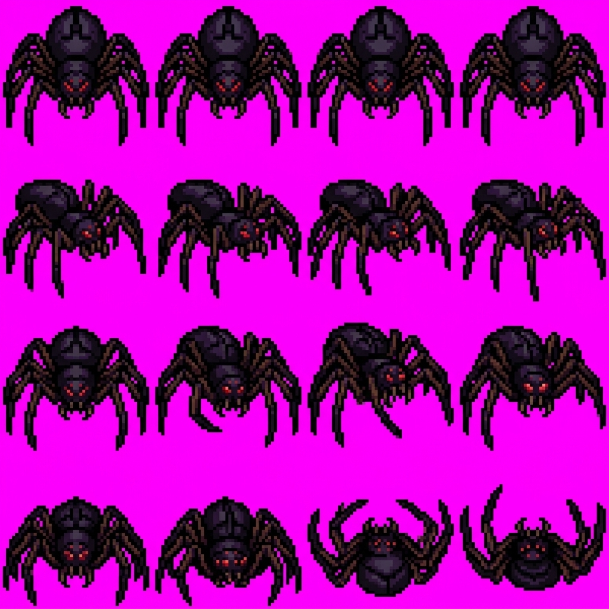
Published Ink-Tight Game Sheet:
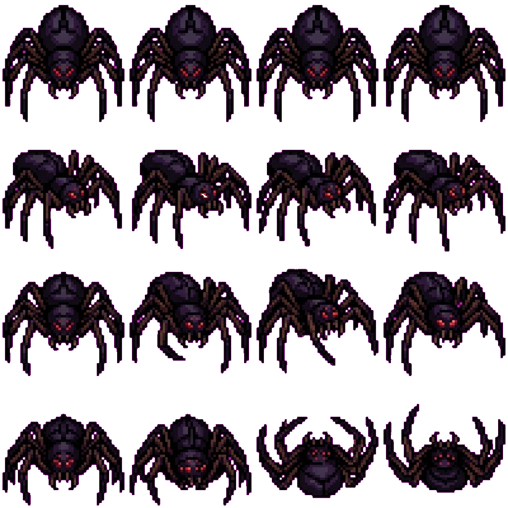
👺 Goblin (goblin-S)
- Status: ✅ Shipped & Published
- Published Manifest: goblin-S.json
Source 4×4 Generation Grid:
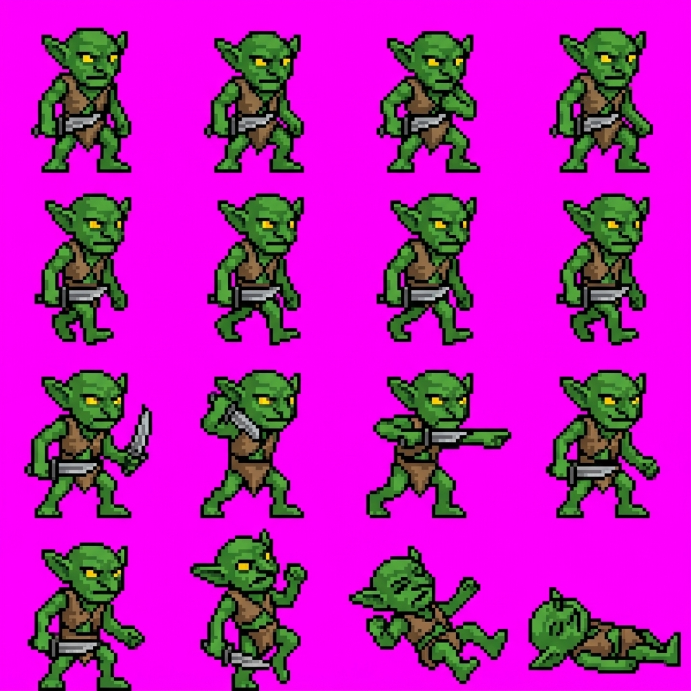
Published Ink-Tight Game Sheet:
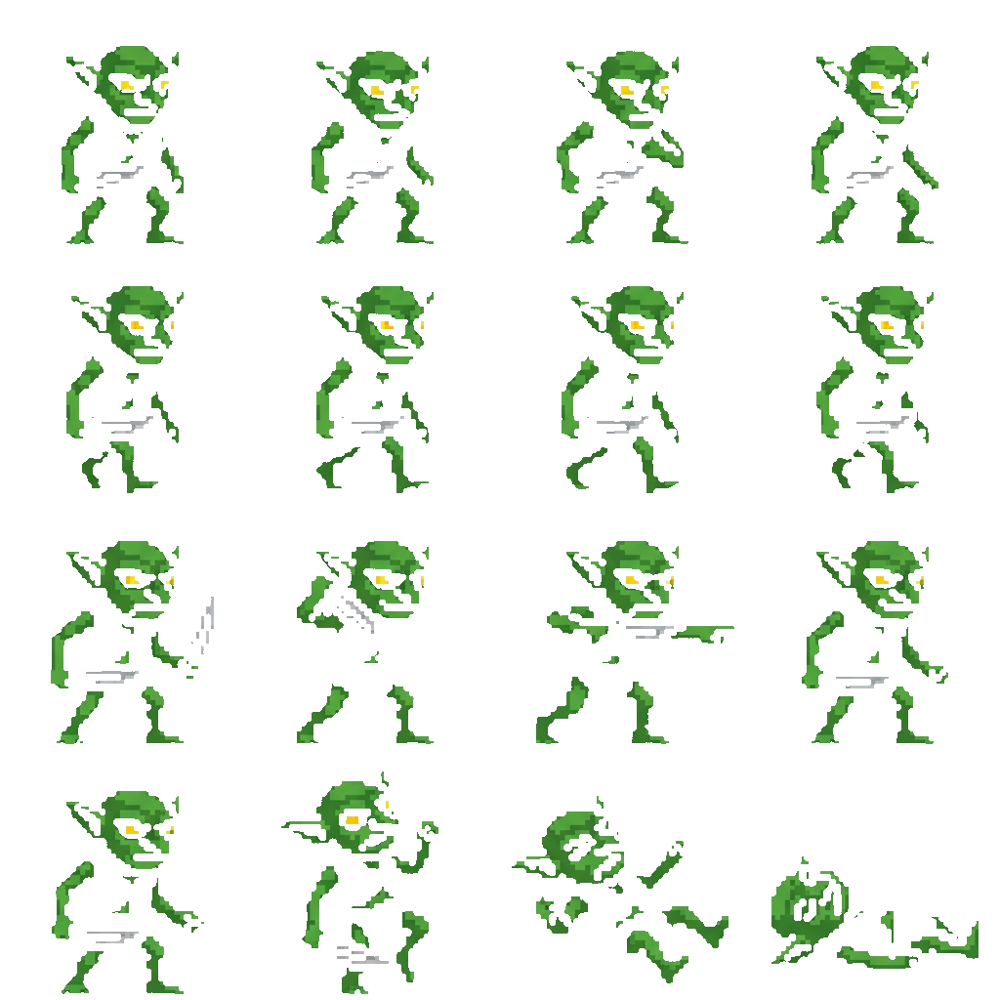
🧪 Slime (slime-S)
- Status: ✅ Shipped & Published
- Published Manifest: slime-S.json
Source 4×4 Generation Grid:
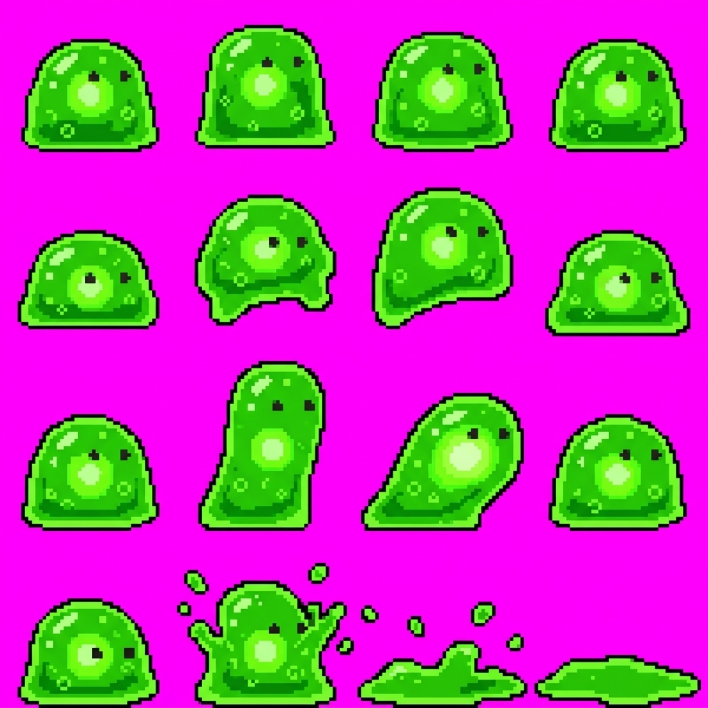
Published Ink-Tight Game Sheet:
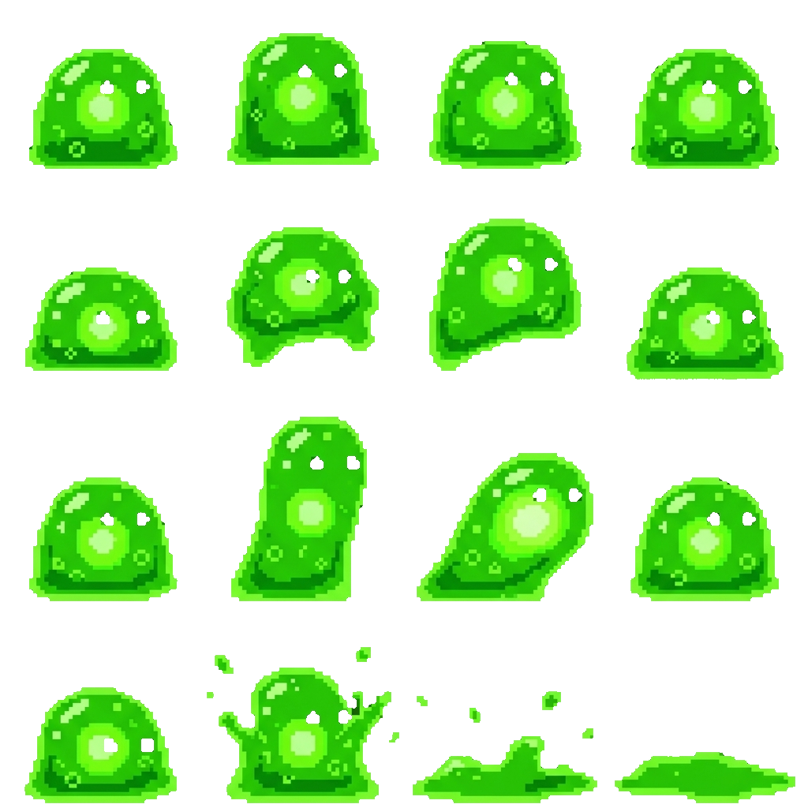
💀 Reaper (reaper-S)
- Status: ✅ Shipped & Published
- Published Manifest: reaper-S.json
Source 4×4 Generation Grid:
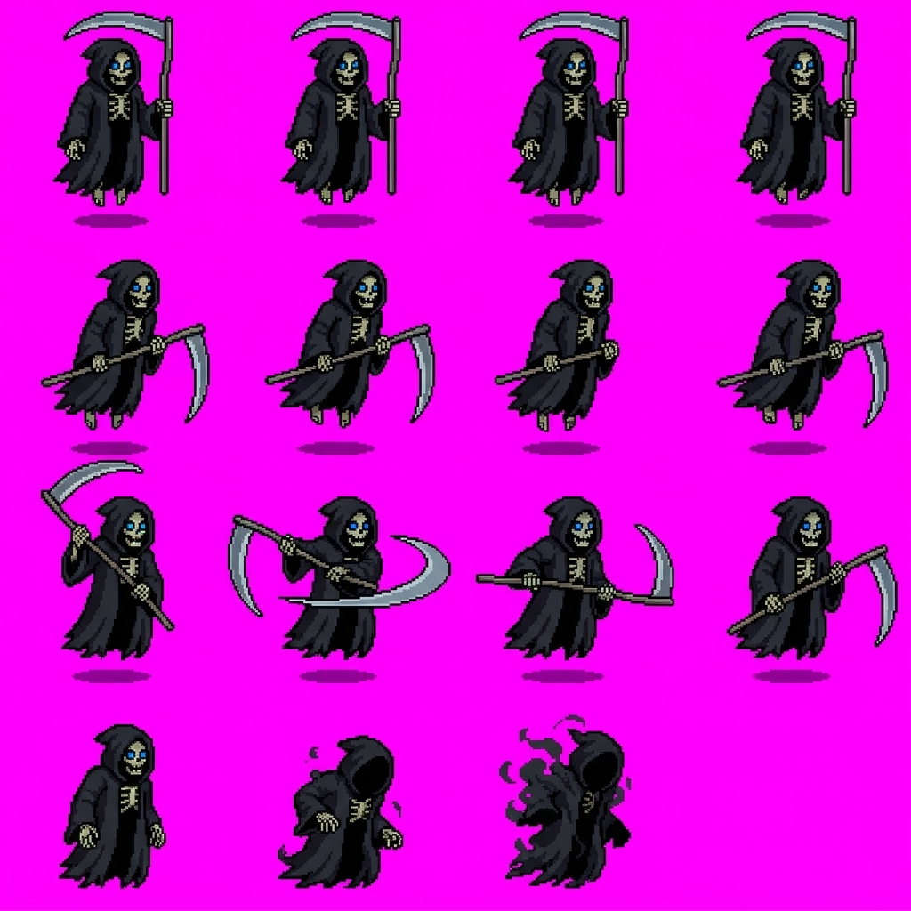
Published Ink-Tight Game Sheet:
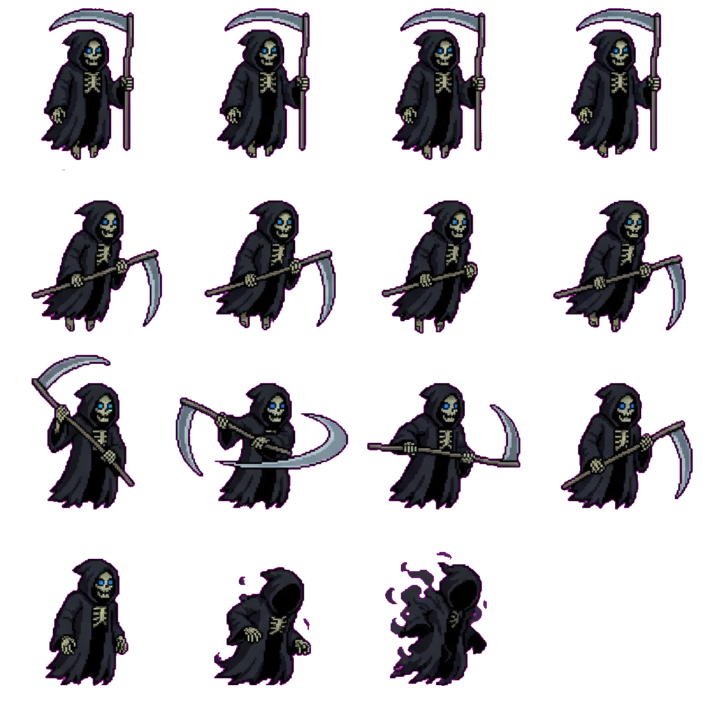
🐗 Existing Reference Monsters
Brute (brute-S)
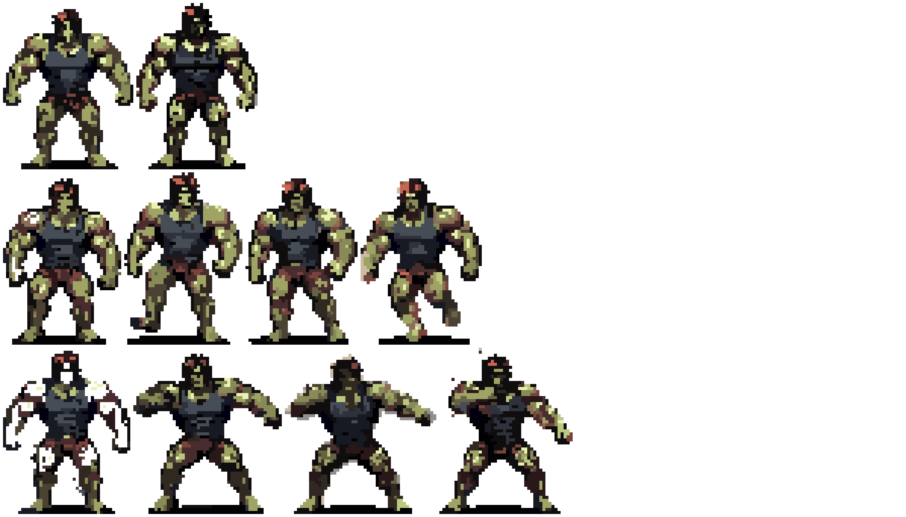
Jester (jester-S)
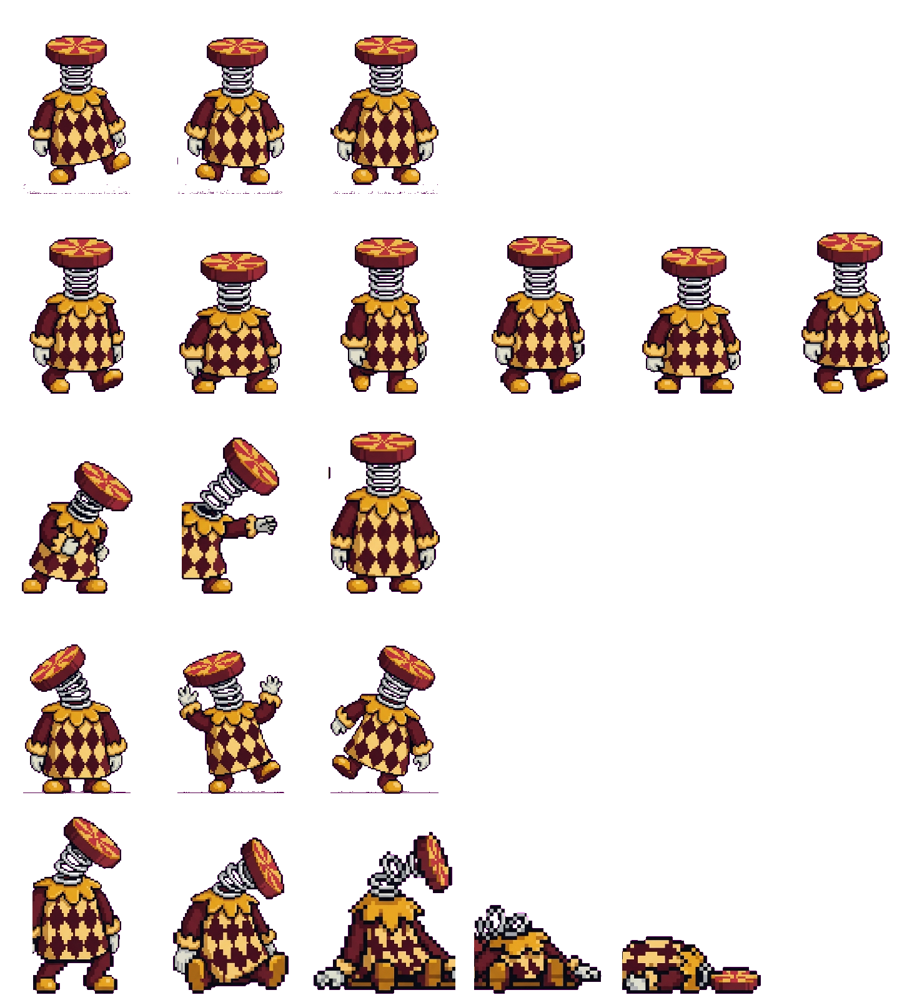
Beaver / Rotortail (beaver-S)
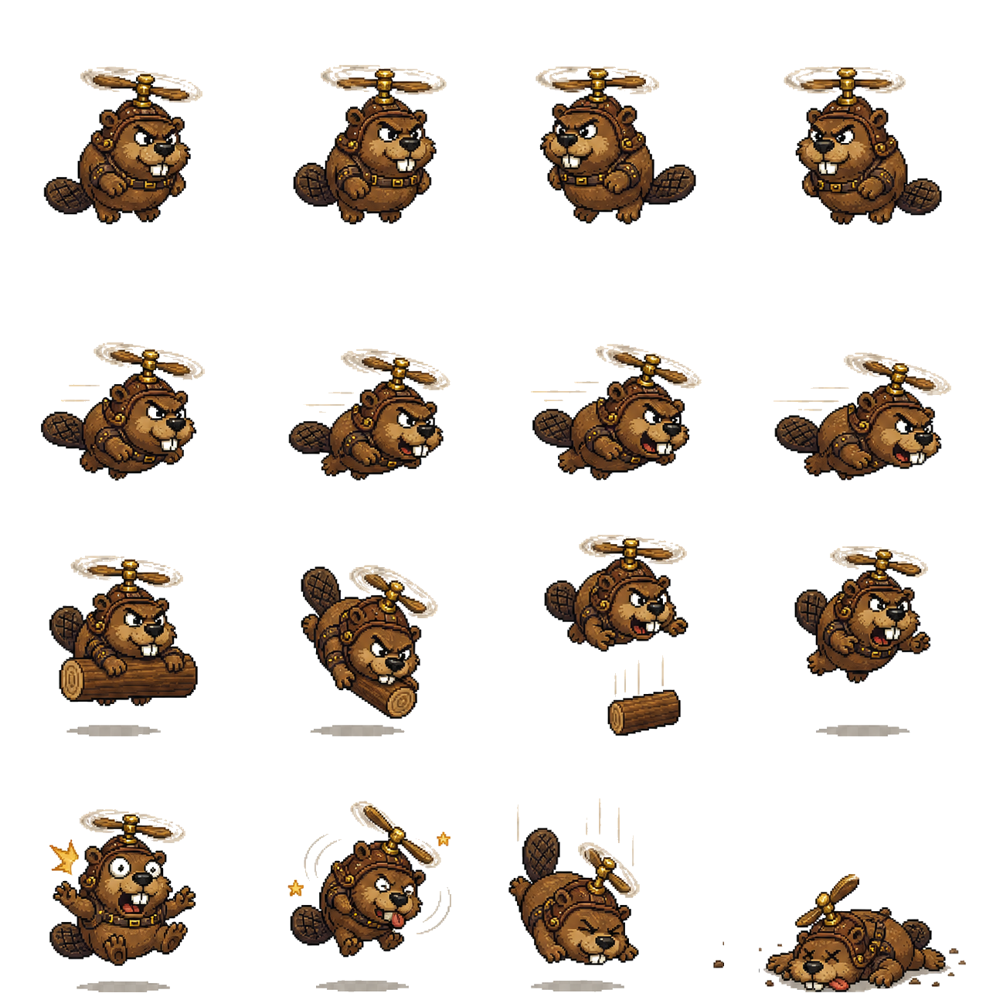
Chapter 18 — TS-to-Rust/WebGPU Conversion Blueprint
Status: IN PROGRESS (2026-08-10) · Produces: Full architecture roadmap for porting braindeadbot-client / legacy to native Rust & WebGPU in pinball-knight.
Executive Summary: This blueprint documents the step-by-step technical conversion path from the legacy TypeScript/React/Three.js prototype (
braindeadbot-client) to the production Rust workspace (pinball-knight), built on Bevy ECS, Rapier3D, and custom WebGPU/WGSL shaders.
1. Workspace Architecture & Crate Responsibilities
The Rust architecture in pinball-knight replaces the monolithic frontend with decoupled, performance-focused crates:
pinball-knight/
├── Cargo.toml # Workspace manifest
├── assets/ # Target baked assets directory
│ ├── gui/ # Rasterised UI fonts & icons
│ ├── sprites/ # Multi-rung baked atlas pages & manifests
│ └── tavern/ # Keeper art & tavern meshes
├── crates/
│ ├── pk-assets/ # Asset schema parser & runtime atlas loader
│ ├── pk-game/ # Main Bevy ECS game loop, input, physics, state
│ └── pk-render/ # WebGPU / WGSL custom render pipelines & shaders
├── legacy/ # Legacy TypeScript prototype & sprite-forge
├── scripts/ # Windows runner & cross-compilation scripts
└── xtask/ # Workspace task automation (`cargo xtask`)2. Phase 1: Asset Baking & Sprite Atlas Pipeline
2.1 The Asset Contract (pk-assets)
The legacy TypeScript prototype uses runtime palette crushing per camera rung. In the Rust engine, cargo xtask bake pre-packs and pre-crushes all sprite sheets into static camera rungs (120, 108, 96, 84, 72 texels):
- Published Input:
legacy/public/sprites/<name>-<dir>.jsonand<name>-<dir>.png. - Baked Target:
assets/sprites/rung-<N>/manifest.json+ atlas page PNGs.
// Contract defined in crates/pk-assets/src/lib.rs
pub mod baked {
#[derive(Debug, Clone, Serialize, Deserialize)]
pub struct RungManifest {
pub version: u32,
pub rung: u32,
pub pages: Vec<String>,
pub sprites: BTreeMap<String, BTreeMap<String, BTreeMap<String, Vec<Frame>>>>,
pub palettes: BTreeMap<String, Vec<String>>,
}
}2.2 Monster Reskin Palette Shaders
Tint variants (e.g. warden as a tinted brute reskin, or webspinner as an acid-tinted spider) do not duplicate texture memory. The WebGPU render pipeline performs palette swaps in the fragment shader using palettes tables stored in RungManifest.
3. Phase 2: Physics Engine & Pinball Table Mechanics
The physics pipeline converts Rapier3D TypeScript bindings to native Rust Rapier3D in crates/pk-game/src/physics.rs:
| Pinball Mechanics | Legacy TS Implementation | Rust / Bevy ECS Target |
|---|---|---|
| Marble Ball Physics | rapier3d-compat RigidBody | pk-game Physics Plugin (RigidBody::Dynamic, Collider::ball) |
| Flippers | RevoluteJoint + spring impulse | ImpulseJoint + motor velocity control (joint.set_motor_velocity) |
| Plunger / Spring | Manual position lerp + impulse | RigidBody::KinematicPositionBased + spring release impulse |
| Bumpers & Kickers | Restitution collision triggers | CollisionEvent::Started event handler applying radial impulse |
| Drop Targets | Mesh visibility toggle + sensor | Sensor colliders toggling active mesh rendering & score events |
| Glass Fracture | bake-glass-fracture.mjs pre-baked mesh | Custom instanced fracture particle mesh in pk-render |
4. Phase 3: Bestiary & Spawning Engine
4.1 Roster Migration Roadmap
All 14 base monsters + 8 expansion kinds are mapped into strongly typed Rust enums:
#[derive(Debug, Clone, Copy, PartialEq, Eq, Hash, Serialize, Deserialize)]
pub enum EnemyKind {
Zombie, Spider, Brute, Spitter, Ghost, Bat, Slime, Reaper,
Goblin, Pin, Golem, Chomper, Sporeling, Jester, Croaker,
Rotortail, Stiltneck, FishFeet, Magnet, Webspinner,
// Expansion roster
Hound, Bloater, Necromancer, Warden, Wisp, Sapper, Crystalback, Mimic,
}4.2 Spawning & Loot Flow
- Spawn Factory:
crates/pk-game/src/enemy.rsspawns enemy entities withTransform,Velocity,Health,AnimationState, andEnemyKind. - Loot Drops: On enemy death,
drop_reagentsanddrop_cardsevaluate drop probabilities: - Spider → Silk + Fang
- Zombie → Rotflesh
- Golem → Ironshard
- Reaper → Grimbone
5. Phase 4: WebGPU WGSL Render Pipeline
The custom renderer in crates/pk-render replaces Three.js with pure WGSL shaders executing directly on WebGPU / Vulkan:
// Shading parameters in WGSL cel-shader pipeline:
// cel = 1.0, steps = 10.0, curve = 0.5, saturation = 1.15, bloom = 0.90
struct CelParams {
steps: f32,
curve: f32,
saturation: f32,
bloom_intensity: f32,
};- Cel Shader Pass: Hard-stop gradient bands with cool-shifted SELOUT outlines (
inkFor). - Bloom & Post Processing:
Rgba16FloatHDR buffer downsampled into a bloom pyramid with vignette. - Particle Instancer: GPU instanced rendering for damage numbers, swoosh arcs, and muzzle flashes.
6. Phase 5: Tavern & UI Systems
- Tavern Keepers: Exported via
cargo xtask bake --tavernintoassets/tavern/. - Bestiary Card UI: Interactive holo-cards with 3D card tilt and rarity shimmer rendered via WebGPU card mesh shaders.
- HUD Readout: Bevy UI text pipeline using custom vendored retro fonts rasterised by
cargo xtask bake --gui-font.
7. Migration Checklist & Progress
- [x] M0: Skeleton: Cross-platform windowing, cross-compilation target (
x86_64-pc-windows-gnullvm), WebGPU clear pass (pk-game). - [x] M1: Asset Engine:
pk-assetsschema parsing and legacy manifest loading. - [ ] M2: Pinball Physics: Port table colliders, flippers, and marble physics to Rapier3D Rust.
- [ ] M3: Bestiary & AI: Port 14 base monster animation state machines & spawning factory.
- [ ] M4: WGSL Renderer: Cel-shading pass, SELOUT outlines, and post-processing bloom.
- [ ] M5: Tavern & Cards: Complete UI deck builder and tavern shop.